Τοῦ δοθέντος κύκλου τὸ κέντρον εὑρεῖν.
῎Εστω ὁ δοθεὶς κύκλος ὁ ΑΒΓ· δεῖ δὴ τοῦ ΑΒΓ κύκλου τὸ κέντρον εὑρεῖν.
Διήχθω τις εἰς αὐτόν, ὡς ἔτυχεν, εὐθεῖα ἡ ΑΒ, καὶ τετμήσθω δίχα κατὰ τὸ Δ σημεῖον, καὶ ἀπὸ τοῦ Δ τῇ ΑΒ πρὸς ὀρθὰς ἤχθω ἡ ΔΓ καὶ διήχθω ἐπὶ τὸ Ε, καὶ τετμήσθω ἡ ΓΕ δίχα κατὰ τὸ Ζ· λέγω, ὅτι τὸ Ζ κέντρον ἐστὶ τοῦ ΑΒΓ [κύκλου].
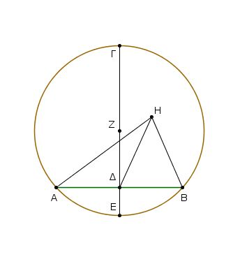
Μὴ γάρ, ἀλλ᾿ εἰ δυνατόν, ἔστω τὸ Η, καὶ ἐπεζεύχθωσαν αἱ ΗΑ, ΗΔ, ΗΒ. καὶ ἐπεὶ ἴση ἐστὶν ἡ ΑΔ τῇ ΔΒ, κοινὴ δὲ ἡ ΔΗ, δύο δὴ αἱ ΑΔ, ΔΗ δύο ταῖς ΗΔ, ΔΒ ἴσαι εἰσὶν ἑκατέρα ἑκατέρᾳ· καὶ βάσις ἡ ΗΑ βάσει τῇ ΗΒ ἐστιν ἴση· ἐκ κέντρου γάρ· γωνία ἄρα ἡ ὑπὸ ΑΔΗ γωνίᾳ τῇ ὑπὸ ΗΔΒ ἴση ἐστίν.
ὅταν δὲ εὐθεῖα ἐπ᾿ εὐθεῖαν σταθεῖσα τὰς ἐφεξῆς γωνίας ἴσας ἀλλήλαις ποιῇ, ὀρθὴ ἑκατέρα τῶν ἴσων γωνιῶν ἐστιν· ὀρθὴ ἄρα ἐστὶν ἡ ὑπὸ ΗΔΒ. ἐστὶ δὲ καὶ ἡ ὑπὸ ΖΔΒ ὀρθή· ἴση ἄρα ἡ ὑπὸ ΖΔΒ τῇ ὑπὸ ΗΔΒ, ἡ μείζων τῇ ἐλάττονι· ὅπερ ἐστὶν ἀδύνατον. οὐκ ἄρα τὸ Η κέντρον ἐστὶ τοῦ ΑΒΓ κύκλου. ὁμοίως δὴ δείξομεν, ὅτι οὐδ᾿ ἄλλο τι πλὴν τοῦ Ζ.
Πόρισμα ᾿Εκ δὴ τούτου φανερόν, ὅτι ἐὰν ἐν κύκλῳ εὐθεῖά τις εὐθεῖάν τινα δίχα καὶ πρὸς ὀρθὰς τέμνῃ, ἐπὶ τῆς τεμνούσης ἐστὶ τὸ κέντρον τοῦ κύκλου. — ὅπερ ἔδει ποιῆσαι.
᾿Εὰν κύκλου ἐπὶ τῆς περιφερείας ληφθῇ δύο τυχόντα σημεῖα, ἡ ἐπὶ τὰ σημεῖα ἐπιζευγνυμένη εὐθεῖα ἐντὸς πεσεῖται τοῦ κύκλου.
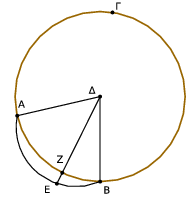
῎Εστω κύκλος ὁ ΑΒΓ, καὶ ἐπὶ τῆς περιφερείας αὐτοῦ εἰλήφθω δύο τυχόντα σημεῖα τὰ Α, Β· λέγω, ὅτι ἡ ἀπὸ τοῦ Α ἐπὶ τὸ Β ἐπιζευγνυμένη εὐθεῖα ἐντὸς πεσεῖται τοῦ κύκλου.
Μὴ γάρ, ἀλλ᾿ εἰ δυνατόν, πιπτέτω ἐκτὸς ὡς ἡ ΑΕΒ, καὶ εἰλήφθω τὸ κέντρον τοῦ ΑΒΓ κύκλου, καὶ ἔστω τὸ Δ, καὶ ἐπεζεύχθωσαν αἱ ΔΑ, ΔΒ, καὶ διήχθω ἡ ΔΖΕ.
᾿Επεὶ οὖν ἴση ἐστὶν ἡ ΔΑ τῇ ΔΒ, ἴση ἄρα καὶ γωνία ἡ ὑπὸ ΔΑΕ τῇ ὑπὸ ΔΒΕ· καὶ ἐπεὶ τριγώνου τοῦ ΔΑΕ μία πλευρὰ προσεκβέβληται ἡ ΑΕΒ, μείζων ἄρα ἡ ὑπὸ ΔΕΒ γωνία τῆς ὑπὸ ΔΑΕ. ἴση δὲ ἡ ὑπὸ ΔΑΕ τῇ ὑπὸ ΔΒΕ· μείζων ἄρα ἡ ὑπὸ ΔΕΒ τῆς ὑπὸ ΔΒΕ. ὑπὸ δὲ τὴν μείζονα γωνίαν ἡ μείζων πλευρὰ ὑποτείνει· μείζων ἄρα ἡ ΔΒ τῆς ΔΕ. ἴση δὲ ἡ ΔΒ τῇ ΔΖ. μείζων ἄρα ἡ ΔΖ τῆς ΔΕ ἡ ἐλάττων τῆς μείζονος· ὅπερ ἐστὶν ἀδύνατον.
οὐκ ἄρα ἡ ἀπὸ τοῦ Α ἐπὶ τὸ Β ἐπιζευγνυμένη εὐθεῖα ἐκτὸς πεσεῖται τοῦ κύκλου. ὁμοίως δὴ δείξομεν, ὅτι οὐδὲ ἐπ᾿ αὐτῆς τῆς περιφερείας· ἐντὸς ἄρα.
᾿Εὰν ἄρα κύκλου ἐπὶ τῆς περιφερείας ληφθῇ δύο τυχόντα σημεῖα, ἡ ἐπὶ τὰ σημεῖα ἐπιζευγνυμένη εὐθεῖα ἐντὸς πεσεῖται τοῦ κύκλου· ὅπερ ἔδει δεῖξαι.
᾿Εὰν ἐν κύκλῳ εὐθεῖά τις διὰ τοῦ κέντρου εὐθεῖάν τινα μὴ διὰ τοῦ κέντρου δίχα τέμνῃ, καὶ πρὸς ὀρθὰς αὐτὴν τέμνει· καὶ ἐὰν πρὸς ὀρθὰς αὐτὴν τέμνῃ, καὶ δίχα αὐτὴν τέμνει.
῎Εστω κύκλος ὁ ΑΒΓ, καὶ ἐν αὐτῷ εὐθεῖά τις διὰ τοῦ κέντρου ἡ ΓΔ εὐθεῖάν τινα μὴ διὰ τοῦ κέντρου τὴν ΑΒ δίχα τεμνέτω κατὰ τὸ Ζ σημεῖον· λέγω, ὅτι καὶ πρὸς ὀρθὰς αὐτὴν τέμνει.
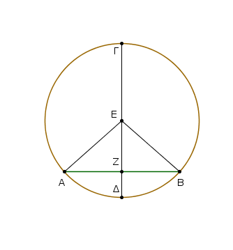
Εἰλήφθω γὰρ τὸ κέντρον τοῦ ΑΒΓ κύκλου, καὶ ἔστω τὸ Ε, καὶ ἐπεζεύχθωσαν αἱ ΕΑ, ΕΒ. Καὶ ἐπεὶ ἴση ἐστὶν ἡ ΑΖ τῇ ΖΒ, κοινὴ δὲ ἡ ΖΕ, δύο δυσὶν ἴσαι [εἰσίν]· καὶ βάσις ἡ ΕΑ βάσει τῇ ΕΒ ἴση· γωνία ἄρα ἡ ὑπὸ ΑΖΕ γωνίᾳ τῇ ὑπὸ ΒΖΕ ἴση ἐστίν. ὅταν δὲ εὐθεῖα ἐπ᾿ εὐθεῖαν σταθεῖσα τὰς ἐφεξῆς γωνίας ἴσας ἀλλήλαις ποιῇ, ὀρθὴ ἑκατέρα τῶν ἴσων γωνιῶν ἐστιν· ἑκατέρα ἄρα τῶν ὑπὸ ΑΖΕ, ΒΖΕ ὀρθή ἐστιν. ἡ ΓΔ ἄρα διὰ τοῦ κέντρου οὖσα τὴν ΑΒ μὴ διὰ τοῦ κέντρου οὖσαν δίχα τέμνουσα καὶ πρὸς ὀρθὰς τέμνει.
᾿Αλλὰ δὴ ἡ ΓΔ τὴν ΑΒ πρὸς ὀρθὰς τεμνέτω· λέγω, ὅτι καὶ δίχα αὐτὴν τέμνει, τουτέστιν, ὅτι ἴση ἐστὶν ἡ ΑΖ τῇ ΖΒ.
Τῶν γὰρ αὐτῶν κατασκευασθέντων, ἐπεὶ ἴση ἐστὶν ἡ ΕΑ τῇ ΕΒ, ἴση ἐστὶ καὶ γωνία ἡ ὑπὸ ΕΑΖ τῇ ὑπὸ ΕΒΖ. ἐστὶ δὲ καὶ ὀρθὴ ἡ ὑπὸ ΑΖΕ ὀρθῇ τῇ ὑπὸ ΒΖΕ ἴση· δύο ἄρα τρίγωνά ἐστι ΕΑΖ, ΕΖΒ τὰς δύο γωνίας δυσὶ γωνίαις ἴσας ἔχοντα καὶ μίαν πλευρὰν μιᾷ πλευρᾷ ἴσην κοινὴν αὐτῶν τὴν ΕΖ ὑποτείνουσαν ὑπὸ μίαν τῶν ἴσων γωνιῶν· καὶ τὰς λοιπὰς ἄρα πλευρὰς ταῖς λοιπαῖς πλευραῖς ἴσας ἕξει· ἴση ἄρα ἡ ΑΖ τῇ ΖΒ.
᾿Εὰν ἄρα ἐν κύκλῳ εὐθεῖά τις διὰ τοῦ κέντρου εὐθεῖάν τινα μὴ διὰ τοῦ κέντρου δίχα τέμνῃ, καὶ πρὸς ὀρθὰς αὐτὴν τέμνει· καὶ ἐὰν πρὸς ὀρθὰς αὐτὴν τέμνῃ, καὶ δίχα αὐτὴν τέμνει· ὅπερ ἔδει δεῖξαι.
᾿Εὰν ἐν κύκλῳ δύο εὐθεῖαι τέμνωσιν ἀλλήλας μὴ δὶα τοῦ κέντρου οὖσαι, οὐ τέμνουσιν ἀλλήλας δίχα.
῎Εστω κύκλος ὁ ΑΒΓΔ, καὶ ἐν αὐτῷ δύο εὐθεῖαι αἱ ΑΓ, ΒΔ τεμνέτωσαν ἀλλήλας κατὰ τὸ Ε μὴ διὰ τοῦ κέντρου οὖσαι· λέγω, ὅτι οὐ τέμνουσιν ἀλλήλας δίχα.
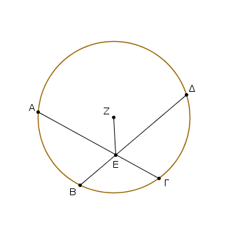
Εἰ γὰρ δυνατόν, τεμνέτωσαν ἀλλήλας δίχα ὥστε ἴσην εἶναι τὴν μὲν ΑΕ τῇ ΕΓ, τὴν δὲ ΒΕ τῇ ΕΔ· καὶ εἰλήφθω τὸ κέντρον τοῦ ΑΒΓΔ κύκλου, καὶ ἔστω τὸ Ζ, καὶ ἐπεζεύχθω ἡ ΖΕ.
᾿Επεὶ οὖν εὐθεῖά τις διὰ τοῦ κέντρου ἡ ΖΕ εὐθεῖάν τινα μὴ διὰ τοῦ κέντρου τὴν ΑΓ δίχα τέμνει, καὶ πρὸς ὀρθὰς αὐτὴν τέμνει· ὀρθὴ ἄρα ἐστὶν ἡ ὑπὸ ΖΕΑ·
πάλιν, ἐπεὶ εὐθεῖά τις ἡ ΖΕ εὐθεῖάν τινα τὴν ΒΔ δίχα τέμνει, καὶ πρὸς ὀρθὰς αὐτὴν τέμνει· ὀρθὴ ἄρα ἡ ὑπὸ ΖΕΒ.
ἐδείχθη δὲ καὶ ἡ ὑπὸ ΖΕΑ ὀρθή· ἴση ἄρα ἡ ὑπὸ ΖΕΑ τῇ ὑπὸ ΖΕΒ ἡ ἐλάττων τῇ μείζονι· ὅπερ ἐστὶν ἀδύνατον. οὐκ ἄρα αἱ ΑΓ, ΒΔ τέμνουσιν ἀλλήλας δίχα.
᾿Εὰν ἄρα ἐν κύκλῳ δύο εὐθεῖαι τέμνωσιν ἀλλήλας μὴ δὶα τοῦ κέντρου οὖσαι, οὐ τέμνουσιν ἀλλήλας δίχα· ὅπερ ἔδει δεῖξαι.
᾿Εὰν δύο κύκλοι τέμνωσιν ἀλλήλους, οὐκ ἔσται αὐτῶν τὸ αὐτὸ κέντρον.
Δύο γὰρ κύκλοι οἱ ΑΒΓ, ΓΔΗ τεμνέτωσαν ἀλλήλους κατὰ τὰ Β, Γ σημεῖα. λέγω, ὅτι οὐκ ἔσται αὐτῶν τὸ αὐτὸ κέντρον.
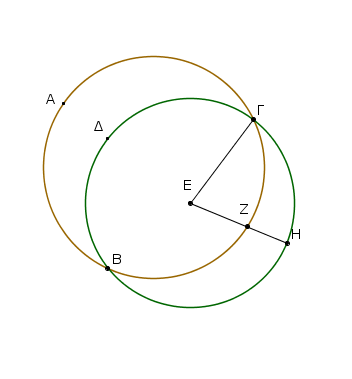
Εἰ γὰρ δυνατόν, ἔστω τὸ Ε, καὶ ἐπεζεύχθω ἡ ΕΓ, καὶ διήχθω ἡ ΕΖΗ, ὡς ἔτυχεν. καὶ ἐπεὶ τὸ Ε σημεῖον κέντρον ἐστὶ τοῦ ΑΒΓ κύκλου, ἵση ἐστὶν ἡ ΕΓ τῇ ΕΖ.
πάλιν, ἐπεὶ τὸ Ε σημεῖον κέντρον ἐστὶ τοῦ ΓΔΗ κύκλου, ἴση ἐστὶν ἡ ΕΓ τῇ ΕΗ· ἐδείχθη δὲ ἡ ΕΓ καὶ τῇ ΕΖ ἴση· καὶ ἡ ΕΖ ἄρα τῇ ΕΗ ἐστιν ἴση ἡ ἐλάσσων τῇ μείζονι· ὅπερ ἐστὶν ἀδύνατον. οὐκ ἄρα τὸ Ε σημεῖον κέντρον ἐστὶ τῶν ΑΒΓ, ΓΔΗ κύκλων.
᾿Εὰν ἄρα δύο κύκλοι τέμνωσιν ἀλλήλους, οὐκ ἔστιν
αὐτῶν τὸ αὐτὸ κέντρον· ὅπερ ἔδει δεῖξαι.
᾿Εὰν δύο κύκλοι ἐφάπτωνται ἀλλήλων, οὐκ ἔσται αὐτῶν τὸ αὐτὸ κέντρον.
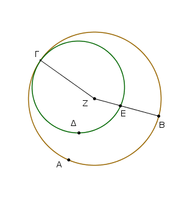
Δύο γὰρ κύκλοι οἱ ΑΒΓ, ΓΔΕ ἐφαπτέσθωσαν ἀλλήλων κατὰ τὸ Γ σημεῖον· λέγω, ὅτι οὐκ ἔσται αὐτῶν τὸ αὐτὸ κέντρον.
Εἰ γὰρ δυνατόν, ἔστω τὸ Ζ, καὶ ἐπεζεύχθω ἡ ΖΓ, καὶ διήχθω, ὡς ἔτυχεν, ἡ ΖΕΒ. ᾿Επεὶ οὖν τὸ Ζ σημεῖον κέντρον ἐστὶ τοῦ ΑΒΓ κύκλου, ἴση ἐστὶν ἡ ΖΓ τῇ ΖΒ.
πάλιν, ἐπεὶ τὸ Ζ σημεῖον κέντρον ἐστὶ τοῦ ΓΔΕ κύκλου, ἴση ἐστὶν ἡ ΖΓ τῇ ΖΕ. ἐδείχθη δὲ ἡ ΖΓ τῇ ΖΒ ἴση· καὶ ἡ ΖΕ ἄρα τῇ ΖΒ ἐστιν ἴση, ἡ ἐλάττων τῇ μείζονι· ὅπερ ἐστὶν ἀδύνατον. οὐκ ἄρα τὸ Ζ σημεῖον κέντρον ἐστὶ τῶν ΑΒΓ, ΓΔΕ κύκλων.
᾿Εὰν ἄρα δύο κύκλοι ἐφάπτωνται ἀλλήλων, οὐκ ἔσται αὐτῶν τὸ αὐτὸ κέντρον· ὅπερ ἔδει δεῖξαι.
᾿Εὰν κύκλου ἐπὶ τῆς διαμέτρου ληφθῇ τι σημεῖον, ὃ μή ἐστι κέντρον τοῦ κύκλου, ἀπὸ δὲ τοῦ σημείου πρὸς τὸν κύκλον προσπίπτωσιν εὐθεῖαί τινες, μεγίστη μὲν ἔσται, ἐφ᾿ ἧς τὸ κέντρον, ἐλαχίστη δὲ ἡ λοιπή, τῶν δὲ ἄλλων ἀεὶ ἡ ἔγγιον τῆς δὶα τοῦ κέντρου τῆς ἀπώτερον μείζων ἐστίν, δύο δὲ μόνον ἴσαι ἀπὸ τοῦ σημείου προσπεσοῦνται πρὸς τὸν κύκλον ἐφ᾿ ἑκάτερα τῆς ἐλαχίστης.
῎Εστω κύκλος ὁ ΑΒΓΔ, διάμετρος δὲ αὐτοῦ ἔστω ἡ ΑΔ, καὶ ἐπὶ τῆς ΑΔ εἰλήφθω τι σημεῖον τὸ Ζ, ὃ μή ἐστι κέντρον τοῦ κύκλου, κέντρον δὲ τοῦ κύκλου ἔστω τὸ Ε, καὶ ἀπὸ τοῦ Ζ πρὸς τὸν ΑΒΓΔ κύκλον προσπιπτέτωσαν εὐθεῖαί τινες αἱ ΖΒ, ΖΓ, ΖΗ· λέγω, ὅτι μεγίστη μέν ἐστιν ἡ ΖΑ, ἐλαχίστη δὲ ἡ ΖΔ, τῶν δὲ ἄλλων ἡ μὲν ΖΒ τῆς ΖΓ μείζων, ἡ δὲ ΖΓ τῆς ΖΗ.
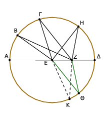
᾿Επεζεύχθωσαν γὰρ αἱ ΒΕ, ΓΕ, ΗΕ. καὶ ἐπεὶ παντὸς τριγώνου αἱ δύο πλευραὶ τῆς λοιπῆς μείζονές εἰσιν, αἱ ἄρα ΕΒ, ΕΖ τῆς ΒΖ μείζονές εἰσιν. ἴση δὲ ἡ ΑΕ τῇ ΒΕ [αἱ ἄρα ΒΕ, ΕΖ ἴσαι εἰσὶ τῇ ΑΖ]· μείζων ἄρα ἡ ΑΖ τῆς ΒΖ.
πάλιν, ἐπεὶ ἴση ἐστὶν ἡ ΒΕ τῇ ΓΕ, κοινὴ δὲ ἡ ΖΕ, δύο δὴ αἱ ΒΕ, ΕΖ δυσὶ ταῖς ΓΕ, ΕΖ ἴσαι εἰσίν. ἀλλὰ καὶ γωνία ἡ ὑπὸ ΒΕΖ γωνίας τῆς ὑπὸ ΓΕΖ μείζων· βάσις ἄρα ἡ ΒΖ βάσεως τῆς ΓΖ μείζων ἐστίν. διὰ τὰ αὐτὰ δὴ καὶ ἡ ΓΖ τῆς ΖΗ μείζων ἐστίν.
Πάλιν, ἐπεὶ αἱ ΗΖ, ΖΕ τῆς ΕΗ μείζονές εἰσιν, ἴση δὲ ἡ ΕΗ τῇ ΕΔ, αἱ ἄρα ΗΖ, ΖΕ τῆς ΕΔ μείζονές εἰσιν. κοινὴ ἀφῃρήσθω ἡ ΕΖ· λοιπὴ ἄρα ἡ ΗΖ λοιπῆς τῆς ΖΔ μείζων ἐστίν. μεγίστη μὲν ἄρα ἡ ΖΑ, ἐλαχίστη δὲ ἡ ΖΔ, μείζων δὲ ἡ μὲν ΖΒ τῆς ΖΓ, ἡ δὲ ΖΓ τῆς ΖΗ.
Λέγω, ὅτι καὶ ἀπὸ τοῦ Ζ σημείου δύο μόνον ἴσαι προσπεσοῦνται πρὸς τὸν ΑΒΓΔ κύκλον ἐφ᾿ ἑκάτερα τῆς ΖΔ ἐλαχίστης.
συνεστάτω γὰρ πρὸς τῇ ΕΖ εὐθείᾳ καὶ τῷ πρὸς αὐτῇ σημείῳ τῷ Ε τῇ ὑπὸ ΗΕΖ γωνίᾳ ἴση ἡ ὑπὸ ΖΕΘ, καὶ ἐπεζεύχθω ἡ ΖΘ. ἐπεὶ οὖν ἴση ἐστὶν ἡ ΗΕ τῇ ΕΘ, κοινὴ δὲ ἡ ΕΖ, δύο δὴ αἱ ΗΕ, ΕΖ δυσὶ ταῖς ΘΕ, ΕΖ ἴσαι εἰσίν· καὶ γωνία ἡ ὑπὸ ΗΕΖ γωνίᾳ τῇ ὑπὸ ΘΕΖ ἴση· βάσις ἄρα ἡ ΖΗ βάσει τῇ ΖΘ ἴση ἐστίν.
λέγω δή, ὅτι τῇ ΖΗ ἄλλη ἴση οὐ προσπεσεῖται πρὸς τὸν κύκλον ἀπὸ τοῦ Ζ σημείου. εἰ γὰρ δυνατόν, προσπιπτέτω ἡ ΖΚ. καὶ ἐπεὶ ἡ ΖΚ τῇ ΖΗ ἴση ἐστίν, ἀλλὰ ἡ ΖΘ τῇ ΖΗ [ἴση ἐστίν], καὶ ἡ ΖΚ ἄρα τῇ ΖΘ ἐστιν ἴση, ἡ ἔγγιον τῆς διὰ τοῦ κέντρου τῇ ἀπώτερον ἴση· ὅπερ ἀδύνατον. οὐκ ἄρα ἀπὸ τοῦ Ζ σημείου ἑτέρα τις προσπεσεῖται πρὸς τὸν κύκλον ἴση τῇ ΗΖ· μία ἄρα μόνη.
᾿Εὰν ἄρα κύκλου ἐπὶ τῆς διαμέτρου ληφθῇ τι σημεῖον, ὃ μή ἐστι κέντρον τοῦ κύκλου, ἀπὸ δὲ τοῦ σημείου πρὸς τὸν κύκλον προσπίπτωσιν εὐθεῖαί τινες, μεγίστη μὲν ἔσται, ἐφ᾿ ἧς τὸ κέντρον, ἐλαχίστη δὲ ἡ λοιπή, τῶν δὲ ἄλλων ἀεὶ ἡ ἔγγιον τῆς δὶα τοῦ κέντρου τῆς ἀπώτερον μείζων ἐστίν, δύο δὲ μόνον ἴσαι ἀπὸ τοῦ αὐτοῦ σημείου προσπεσοῦνται πρὸς τὸν κύκλον ἐφ᾿ ἑκάτερα τῆς ἐλαχίστης· ὅπερ ἔδει δεῖξαι.
᾿Εὰν κύκλου ληφθῇ τι σημεῖον ἐκτός, ἀπὸ δὲ τοῦ σημείου πρὸς τὸν κύκλον διαχθῶσιν εὐθεῖαί τινες, ὧν μία μὲν διὰ τοῦ κέντρου, αἱ δὲ λοιπαί, ὡς ἔτυχεν, τῶν μὲν πρὸς τὴν κοίλην περιφέρειαν προσπιπτουσῶν εὐθειῶν μεγίστη μέν ἐστιν ἡ διὰ τοῦ κέντρου, τῶν δὲ ἄλλων ἀεὶ ἡ ἔγγιον τῆς διὰ τοῦ κέντρου τῆς ἀπώτερον μείζων ἐστίν, τῶν δὲ πρὸς τὴν κυρτὴν περιφέρειαν προσπιπτουσῶν εὐθειῶν ἐλαχίστη μέν ἐστιν ἡ μεταξὺ τοῦ τε σημείου καὶ τῆς διαμέτρου, τῶν δὲ ἄλλων ἀεὶ ἡ ἔγγιον τῆς ἐλαχίστης τῆς ἀπώτερόν ἐστιν ἐλάττων, δύο δὲ μόνον ἴσαι ἀπὸ τοῦ σημείου προσπεσοῦνται πρὸς τὸν κύκλον ἐφ᾿ ἑκάτερα τῆς ἐλαχίστης.
῎Εστω κύκλος ὁ ΑΒΓ, καὶ τοῦ ΑΒΓ εἰλήφθω τι σημεῖον ἐκτὸς τὸ Δ, καὶ ἀπ᾿ αὐτοῦ διήχθωσαν εὐθεῖαί τινες αἱ ΔΑ, ΔΕ, ΔΖ, ΔΓ, ἔστω δὲ ἡ ΔΑ διὰ τοῦ κέντρου. λέγω, ὅτι τῶν μὲν πρὸς τὴν ΑΕΖΓ κοίλην περιφέρειαν προσπιπτουσῶν εὐθειῶν μεγίστη μέν ἐστιν ἡ διὰ τοῦ κέντρου ἡ ΔΑ, μείζων δὲ ἡ μὲν ΔΕ τῆς ΔΖ ἡ δὲ ΔΖ τῆς ΔΓ, τῶν δὲ πρὸς τὴν ΘΛΚΗ κυρτὴν περιφέρειαν προσπιπτουσῶν εὐθειῶν ἐλαχίστη μέν ἐστιν ἡ ΔΗ ἡ μεταξὺ τοῦ σημείου καὶ τῆς διαμέτρου τῆς ΑΗ, ἀεὶ δὲ ἡ ἔγγιον τῆς ΔΗ ἐλαχίστης ἐλάττων ἐστὶ τῆς ἀπώτερον, ἡ μὲν ΔΚ τῆς ΔΛ, ἡ δὲ ΔΛ τῆς ΔΘ.
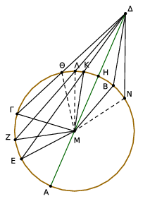
Εἰλήφθω γὰρ τὸ κέντρον τοῦ ΑΒΓ κύκλου καὶ ἔστω τὸ Μ· καὶ ἐπεζεύχθωσαν αἱ ΜΕ, ΜΖ, ΜΓ, ΜΚ, ΜΛ, ΜΘ.
Καὶ ἐπεὶ ἴση ἐστὶν ἡ ΑΜ τῇ ΕΜ, κοινὴ προσκείσθω ἡ ΜΔ· ἡ ἄρα ΑΔ ἴση ἐστὶ ταῖς ΕΜ, ΜΔ. ἀλλ᾿ αἱ ΕΜ, ΜΔ τῆς ΕΔ μείζονές εἰσιν· καὶ ἡ ΑΔ ἄρα τῆς ΕΔ μείζων ἐστίν.
πάλιν, ἐπεὶ ἴση ἐστὶν ἡ ΜΕ τῇ ΜΖ, κοινὴ δὲ ἡ ΜΔ, αἱ ΕΜ, ΜΔ ἄρα ταῖς ΖΜ, ΜΔ ἴσαι εἰσίν· καὶ γωνία ἡ ὑπὸ ΕΜΔ γωνίας τῆς ὑπὸ ΖΜΔ μείζων ἐστίν. βάσις ἄρα ἡ ΕΔ βάσεως τῆς ΖΔ μείζων ἐστίν·
ὁμοίως δὴ δείξομεν, ὅτι καὶ ἡ ΖΔ τῆς ΓΔ μείζων ἐστίν· μεγίστη μὲν ἄρα ἡ ΔΑ, μείζων δὲ ἡ μὲν ΔΕ τῆς ΔΖ, ἡ δὲ ΔΖ τῆς ΔΓ. Καὶ ἐπεὶ αἱ ΜΚ, ΚΔ τῆς ΜΔ μείζονές εἰσιν, ἴση δὲ ἡ ΜΗ τῇ ΜΚ, λοιπὴ ἄρα ἡ ΚΔ λοιπῆς τῆς ΗΔ μείζων ἐστίν· ὥστε ἡ ΗΔ τῆς ΚΔ ἐλάττων ἐστίν· καὶ ἐπεὶ τριγώνου τοῦ ΜΛΔ ἐπὶ μιᾶς τῶν πλευρῶν τῆς ΜΔ δύο εὐθεῖαι ἐντὸς συνεστάθησαν αἱ ΜΚ, ΚΔ, αἱ ἄρα ΜΚ, ΚΔ τῶν ΜΛ, ΛΔ ἐλάττονές εἰσιν· ἴση δὲ ἡ ΜΚ τῇ ΜΛ· λοιπὴ ἄρα ἡ ΔΚ λοιπῆς τῆς ΔΛ ἐλάττων ἐστίν.
ὁμοίως δὴ δείξομεν, ὅτι καὶ ἡ ΔΛ τῆς ΔΘ ἐλάττων ἐστίν· ἐλαχίστη μὲν ἄρα ἡ ΔΗ, ἐλάττων δὲ ἡ μὲν ΔΚ τῆς ΔΛ ἡ δὲ ΔΛ τῆς ΔΘ.
Λέγω, ὅτι καὶ δύο μόνον ἴσαι ἀπὸ τοῦ Δ σημείου προσπεσοῦνται πρὸς τὸν κύκλον ἐφ᾿ ἑκάτερα τῆς ΔΗ ἐλαχίστης· συνεστάτω πρὸς τῇ ΜΔ εὐθείᾳ καὶ τῷ πρὸς αὐτῇ σημείῳ τῷ Μ τῇ ὑπὸ ΚΜΔ γωνίᾳ ἴση γωνία ἡ ὑπὸ ΔΜΒ, καὶ ἐπεζεύχθω ἡ ΔΒ. καὶ ἐπεὶ ἴση ἐστὶν ἡ ΜΚ τῇ ΜΒ, κοινὴ δὲ ἡ ΜΔ, δύο δὴ αἱ ΚΜ, ΜΔ δύο ταῖς ΒΜ, ΜΔ ἴσαι εἰσὶν ἑκατέρα ἑκατέρᾳ· καὶ γωνία ἡ ὑπὸ ΚΜΔ γωνίᾳ τῇ ὑπὸ ΒΜΔ ἴση· βάσις ἄρα ἡ ΔΚ βάσει τῇ ΔΒ ἴση ἐστίν.
λέγω [δή], ὅτι τῇ ΔΚ εὐθείᾳ ἄλλη ἴση οὐ προσπεσεῖται πρὸς τὸν κύκλον ἀπὸ τοῦ Δ σημείου. εἰ γὰρ δυνατόν, προσπιπτέτω καὶ ἔστω ἡ ΔΝ. ἐπεὶ οὖν ἡ ΔΚ τῇ ΔΝ ἐστιν ἴση, ἀλλ᾿ ἡ ΔΚ τῇ ΔΒ ἐστιν ἴση, καὶ ἡ ΔΒ ἄρα τῇ ΔΝ ἐστιν ἴση, ἡ ἔγγιον τῆς ΔΗ ἐλαχίστης τῇ ἀπώτερον [ἐστιν] ἴση· ὅπερ ἀδύνατον ἐδείχθη. οὐκ ἄρα πλείους ἢ δύο ἴσαι πρὸς τὸν ΑΒΓ κύκλον ἀπὸ τοῦ Δ σημείου ἐφ᾿ ἑκάτερα τῆς ΔΗ ἐλαχίστης προσπεσοῦνται.
᾿Εὰν ἄρα κύκλου ληφθῇ τι σημεῖον ἐκτός, ἀπὸ δὲ τοῦ σημείου πρὸς τὸν κύκλον διαχθῶσιν εὐθεῖαί τινες, ὧν μία μὲν διὰ τοῦ κέντρου αἱ δὲ λοιπαί, ὡς ἔτυχεν, τῶν μὲν πρὸς τὴν κοίλην περιφέρειαν προσπιπτουσῶν εὐθειῶν μεγίστη μέν ἐστιν ἡ διὰ τοῦ κέντου, τῶν δὲ ἄλλων ἀεὶ ἡ ἔγγιον τῆς διὰ τοῦ κέντρου τῆς ἀπώτερον μείζων ἐστίν, τῶν δὲ πρὸς τὴν κυρτὴν περιφέρειαν προσπιπτουσῶν εὐθειῶν ἐλαχίστη μέν ἐστιν ἡ μεταξὺ τοῦ τε σημείου καὶ τῆς διαμέτρου, τῶν δὲ ἄλλων ἀεὶ ἡ ἔγγιον τῆς ἐλαχίστης τῆς ἀπώτερόν ἐστιν ἐλάττων, δύο δὲ μόνον ἴσαι ἀπὸ τοῦ σημείου προσπεσοῦνται πρὸς τὸν κύκλον ἐφ᾿ ἑκάτερα τῆς ἐλαχίστης· ὅπερ ἔδει δεῖξαι.
᾿Εὰν κύκλου ληφθῇ τι σημεῖον ἐντός, ἀπο δὲ τοῦ σημείου πρὸς τὸν κύκλον προσπίπτωσι πλείους ἢ δύο ἴσαι εὐθεῖαι, τὸ ληφθὲν σημεῖον κέντρον ἐστὶ τοῦ κύκλου.
῎Εστω κύκλος ὁ ΑΒΓ, ἐντὸς δὲ αὐτοῦ σημεῖον τὸ Δ, καὶ ἀπὸ τοῦ Δ πρὸς τὸν ΑΒΓ κύκλον προσπιπτέτωσαν πλείους ἢ δύο ἴσαι εὐθεῖαι αἱ ΔΑ, ΔΒ, ΔΓ· λέγω, ὅτι τὸ Δ σημεῖον κέντρον ἐστὶ τοῦ ΑΒΓ κύκλου.
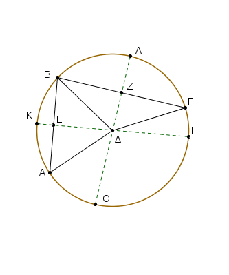
᾿Επεζεύχθωσαν γὰρ αἱ ΑΒ, ΒΓ καὶ τετμήσθωσαν δίχα κατὰ τὰ Ε, Ζ σημεῖα, καὶ ἐπιζευχθεῖσαι αἱ ΕΔ, ΖΔ διήχθωσαν ἐπὶ τὰ Η, Κ, Θ, Λ σημεῖα.
᾿Επεὶ οὖν ἴση ἐστὶν ἡ ΑΕ τῇ ΕΒ, κοινὴ δὲ ἡ ΕΔ, δύο δὴ αἱ ΑΕ, ΕΔ δύο ταῖς ΒΕ, ΕΔ ἴσαι εἰσίν· καὶ βάσις ἡ ΔΑ βάσει τῇ ΔΒ ἴση· γωνία ἄρα ἡ ὑπὸ ΑΕΔ γωνίᾳ τῇ ὑπὸ ΒΕΔ ἴση ἐστίν· ὀρθὴ ἄρα ἑκατέρα τῶν ὑπὸ ΑΕΔ, ΒΕΔ γωνιῶν· ἡ ΗΚ ἄρα τὴν ΑΒ τέμνει δίχα καὶ πρὸς ὀρθάς. καὶ ἐπεί, ἐὰν ἐν κύκλῳ εὐθεῖά τις εὐθεῖάν τινα δίχα τε καὶ πρὸς ὀρθὰς τέμνῃ, ἐπὶ τῆς τεμνούσης ἐστὶ τὸ κέντρον τοῦ κύκλου, ἐπὶ τῆς ΗΚ ἄρα ἐστὶ τὸ κέντρον τοῦ κύκλου. διὰ τὰ αὐτὰ δὴ καὶ ἐπὶ τῆς ΘΛ ἐστι τὸ κέντρον τοῦ ΑΒΓ κύκλου. καὶ οὐδὲν ἕτερον κοινὸν ἔχουσιν αἱ ΗΚ, ΘΛ εὐθεῖαι ἢ τὸ Δ σημεῖον· τὸ Δ ἄρα σημεῖον κέντρον ἐστὶ τοῦ ΑΒΓ κύκλου.
᾿Εὰν ἄρα κύκλου ληφθῇ τι σημεῖον ἐντός, ἀπὸ δὲ τοῦ σημείου πρὸς τὸν κύκλον προσπίπτωσι πλείους ἢ δύο ἴσαι εὐθεῖαι, τὸ ληφθὲν σημεῖον κέντρον ἐστὶ τοῦ κύκλου· ὅπερ ἔδει δεῖξαι.
Κύκλος κύκλον οὐ τέμνει κατὰ πλείονα σημεῖα ἢ δύο.
Εἰ γὰρ δυνατόν, κύκλος ὁ ΑΒΓ κύκλον τὸν ΔΕΖ τεμνέτω κατὰ πλείονα σημεῖα ἢ δύο τὰ Β, Η, Ζ, Θ, καὶ ἐπιζευχθεῖσαι αἱ ΒΘ, ΒΗ δίχα τεμνέσθωσαν κατὰ τὰ Κ, Λ σημεῖα· καὶ ἀπὸ τῶν Κ, Λ ταῖς ΒΘ, ΒΗ πρὸς ὀρθὰς ἀχθεῖσαι αἱ ΚΓ, ΛΜ διήχθωσαν ἐπὶ τὰ Α, Ε σημεῖα.
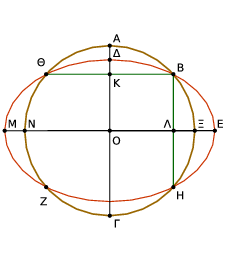
᾿Επεὶ οὖν ἐν κύκλῳ τῷ ΑΒΓ εὐθεῖά τις ἡ ΑΓ εὐθεῖάν τινα τὴν ΒΘ δίχα καὶ πρὸς ὀρθὰς τέμνει, ἐπὶ τῆς ΑΓ ἄρα ἐστὶ τὸ κέντρον τοῦ ΑΒΓ κύκλου.
πάλιν, ἐπεὶ ἐν κύκλῳ τῷ αὐτῷ τῷ ΑΒΓ εὐθεῖά τις ἡ ΝΞ εὐθεῖάν τινα τὴν ΒΗ δίχα καὶ πρὸς ὀρθὰς τέμνει, ἐπὶ τῆς ΝΞ ἄρα ἐστὶ τὸ κέντρον τοῦ ΑΒΓ κύκλου.
ἐδείχθη δὲ καὶ ἐπὶ τῆς ΑΓ, καὶ κατ᾿ οὐδὲν συμβάλλουσιν αἱ ΑΓ, ΝΞ εὐθεῖαι ἢ κατὰ τὸ Ο· τὸ Ο ἄρα σημεῖον κέντρον ἐστὶ τοῦ ΑΒΓ κύκλου. ὁμοίως δὴ δείξομεν, ὅτι καὶ τοῦ ΔΕΖ κύκλου κέντρον ἐστὶ τὸ Ο·
δύο ἄρα κύκλων τεμνόντων ἀλλήλους τῶν ΑΒΓ, ΔΕΖ τὸ αὐτό ἐστι κέντρον τὸ Ο· ὅπερ ἐστὶν ἀδύνατον.
Οὐκ ἄρα κύκλος κύκλον τέμνει κατὰ πλείονα σημεῖα ἢ δύο· ὅπερ ἔδει δεῖξαι.
᾿Εὰν δύο κύκλοι ἐφάπτωνται ἀλλήλων ἐντός, καὶ ληφθῇ αὐτῶν τὰ κέντρα, ἡ ἐπὶ τὰ κέντρα αὐτῶν ἐπιζευγνυμένη εὐθεῖα καὶ ἐκβαλλομένη ἐπὶ τὴν συναφὴν πεσεῖται τῶν κύκλων.
Δύο γὰρ κύκλοι οἱ ΑΒΓ, ΑΔΕ ἐφαπτέσθωσαν ἀλλήλων ἐντὸς κατὰ τὸ Α σημεῖον, καὶ εἰλήφθω τοῦ μὲν ΑΒΓ κύκλου κέντρον τὸ Ζ, τοῦ δὲ ΑΔΕ τὸ Η·
λέγω, ὅτι ἡ ἀπὸ τοῦ Η ἐπὶ τὸ Ζ ἐπιζευγνυμένη εὐθεῖα ἐκβαλλομένη ἐπὶ τὸ Α πεσεῖται. Μὴ γάρ, ἀλλ᾿ εἰ δυνατόν, πιπτέτω ὡς ἡ ΖΗΘ, καὶ ἐπεζεύχθωσαν αἱ ΑΖ, ΑΗ.
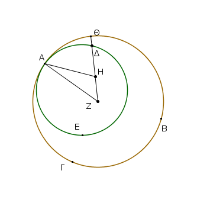
᾿Επεὶ οὖν αἱ ΑΗ, ΗΖ τῆς ΖΑ, τουτέστι τῆς ΖΘ, μείζονές εἰσιν, κοινὴ ἀφῃρήσθω ἡ ΖΗ· λοιπὴ ἄρα ἡ ΑΗ λοιπῆς τῆς ΗΘ μείζων ἐστίν. ἴση δὲ ἡ ΑΗ τῇ ΗΔ· καὶ ἡ ΗΔ ἄρα τῆς ΗΘ μείζων ἐστὶν ἡ ἐλάττων τῆς μείζονος· ὅπερ ἐστὶν ἀδύνατον· οὐκ ἄρα ἡ ἀπὸ τοῦ Ζ ἐπὶ τὸ Η ἐπιζευγνυμένη εὐθεὶα ἐκτὸς πεσεῖται· κατὰ τὸ Α ἄρα ἐπὶ τῆς συναφῆς πεσεῖται.
᾿Εὰν ἄρα δύο κύκλοι ἐφάπτωνται ἀλλήλων ἐντός, [καὶ ληφθῇ αὐτῶν τὰ κέντρα], ἡ ἐπὶ τὰ κέντρα αὐτῶν ἐπιζευγνυμένη εὐθεῖα [καὶ ἐκβαλλομένη] ἐπὶ τὴν συναφὴν πεσεῖται τῶν κύκλων· ὅπερ ἔδει δεῖξαι.
᾿Εὰν δύο κύκλοι ἐφάπτωνται ἀλλήλων ἐκτός, ἡ ἐπὶ τὰ κέντρα αὐτῶν ἐπιζευγνυμένη διὰ τῆς ἐπαφῆς ἐλεύσεται.
Δύο γὰρ κύκλοι οἱ ΑΒΓ, ΑΔΕ ἐφαπτέσθωσαν ἀλλήλων ἐκτὸς κατὰ τὸ Α σημεῖον, καὶ εἰλήφθω τοῦ μὲν ΑΒΓ κέντρον τὸ Ζ, τοῦ δὲ ΑΔΕ τὸ Η· λέγω, ὅτι ἡ ἀπὸ τοῦ Ζ ἐπὶ τὸ Η ἐπιζευγνυμένη εὐθεῖα διὰ τῆς κατὰ τὸ Α ἐπαφῆς ἐλεύσεται.
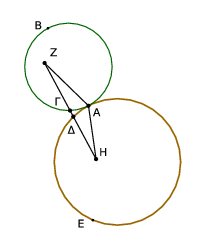
Μὴ γάρ, ἀλλ᾿ εἰ δυνατόν, ἐρχέσθω ὡς ἡ ΖΓΔΗ, καὶ ἐπεζεύχθωσαν αἱ ΑΖ, ΑΗ. ᾿Επεὶ οὖν τὸ Ζ σημεῖον κέντρον ἐστὶ τοῦ ΑΒΓ κύκλου, ἴση ἐστὶν ἡ ΖΑ τῇ ΖΓ. πάλιν, ἐπεὶ τὸ Η σημεῖον κέντρον ἐστὶ τοῦ ΑΔΕ κύκλου, ἴση ἐστὶν ἡ ΗΑ τῇ ΗΔ.
ἐδείχθη δὲ καὶ ἡ ΖΑ τῇ ΖΓ ἴση· αἱ ἄρα ΖΑ, ΑΗ ταῖς ΖΓ, ΗΔ ἴσαι εἰσίν· ὥστε ὅλη ἡ ΖΗ τῶν ΖΑ, ΑΗ μείζων ἐστίν· ἀλλὰ καὶ ἐλάττων· ὅπερ ἐστὶν ἀδύνατον. οὐκ ἄρα ἡ ἀπὸ τοῦ Ζ ἐπὶ τὸ Η ἐπιζευγνυμένη εὐθεῖα διὰ τῆς κατὰ τὸ Α ἐπαφῆς οὐκ ἐλεύσεται· δι᾿ αὐτῆς ἄρα.
᾿Εὰν ἄρα δύο κύκλοι ἐφάπτωνται ἀλλήλων ἐκτός, ἡ ἐπὶ τὰ κέντρα αὐτῶν ἐπιζευγνυμένη [εὐθεῖα] διὰ τῆς ἐπαφῆς ἐλεύσεται· ὅπερ ἔδει δεῖξαι.
Κύκλος κύκλου οὐκ ἐφάπτεται κατὰ πλείονα σημεῖα ἢ καθ᾿ ἕν, ἐάν τε ἐντὸς ἐάν τε ἐκτὸς ἐφάπτηται.
Εἰ γὰρ δυνατόν, κύκλος ὁ ΑΒΓΔ κύκλου τοῦ ΕΒΖΔ ἐφαπτέσθω πρότερον ἐντὸς κατὰ πλείονα σημεῖα ἢ ἓν τὰ Δ, Β. Καὶ εἰλήφθω τοῦ μὲν ΑΒΓΔ κύκλου κέντρον τὸ Η, τοῦ δὲ ΕΒΖΔ τὸ Θ.
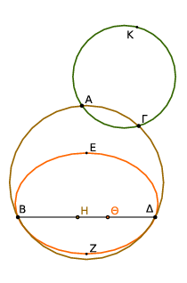
῾Η ἄρα ἀπὸ τοῦ Η ἐπὶ τὸ Θ ἐπιζευγνυμένη ἐπὶ τὰ Β, Δ πεσεῖται. πιπτέτω ὡς ἡ ΒΗΘΔ. καὶ ἐπεὶ τὸ Η σημεῖον κέντρον ἐστὶ τοῦ ΑΒΓΔ κύκλου, ἴση ἐστὶν ἡ ΒΗ τῇ ΗΔ· μείζων ἄρα ἡ ΒΗ τῆς ΘΔ· πολλῷ ἄρα μείζων ἡ ΒΘ τῆς ΘΔ.
πάλιν, ἐπεὶ τὸ Θ σημεῖον κέντρον ἐστὶ τοῦ ΕΒΖΔ κύκλου, ἴση ἐστὶν ἡ ΒΘ τῇ ΘΔ· ἐδείχθη δὲ αὐτῆς καὶ πολλῷ μείζων· ὅπερ ἀδύνατον· οὐκ ἄρα κύκλος κύκλου ἐφάπτεται ἐντὸς κατὰ πλείονα σημεῖα ἢ ἕν.
Λέγω δή, ὅτι οὐδὲ ἐκτός.
Εἰ γὰρ δυνατόν, κύκλος ὁ ΑΓΚ κύκλου τοῦ ΑΒΓΔ ἐφαπτέσθω ἐκτὸς κατὰ πλείονα σημεῖα ἢ ἓν τὰ Α, Γ, καὶ ἐπεζεύχθω ἡ ΑΓ.
῎Επεὶ οὖν κύκλων τῶν ΑΒΓΔ, ΑΓΚ εἴληπται ἐπὶ τῆς περιφερείας ἑκατέρου δύο τυχόντα σημεῖα τὰ Α, Γ, ἡ ἐπὶ τὰ σημεῖα ἐπιζευγνυμένη εὐθεῖα ἐντὸς ἑκατέρου πεσεῖται· ἀλλὰ τοῦ μὲν ΑΒΓΔ ἐντὸς ἔπεσεν, τοῦ δὲ ΑΓΚ ἐκτός· ὅπερ ἄτοπον·
οὐκ ἄρα κύκλος κύκλου ἐφάπτεται ἐκτὸς κατὰ πλείονα σημεῖα ἢ ἕν. ἐδείχθη δέ, ὅτι οὐδὲ ἐντός.
Κύκλος ἄρα κύκλου οὐκ ἐφάπτεται κατὰ πλείονα σημεῖα ἢ [καθ᾿] ἕν, ἐάν τε ἐντὸς ἐάν τε ἐκτὸς ἐφάπτηται· ὅπερ ἔδει δεῖξαι.
᾿Εν κύκλῳ αἱ ἴσαι εὐθεῖαι ἴσον ἀπέχουσιν ἀπὸ τοῦ κέντρου, καὶ αἱ ἴσον ἀπέχουσαι ἀπὸ τοῦ κέντρου ἴσαι ἀλλήλαις εἰσίν.
῎Εστω κύκλος ὁ ΑΒΓΔ, καὶ ἐν αὐτῷ ἴσαι εὐθεῖαι ἔστωσαν αἱ ΑΒ, ΓΔ· λέγω, ὅτι αἱ ΑΒ, ΓΔ ἴσον ἀπέχουσιν ἀπὸ τοῦ κέντρου. Εἰλήφθω γὰρ τὸ κέντον τοῦ ΑΒΓΔ κύκλου καὶ ἔστω τὸ Ε, καὶ ἀπὸ τοῦ Ε ἐπὶ τὰς ΑΒ, ΓΔ κάθετοι ἤχθωσαν αἱ ΕΖ, ΕΗ, καὶ ἐπεζεύχθωσαν αἱ ΑΕ, ΕΓ.
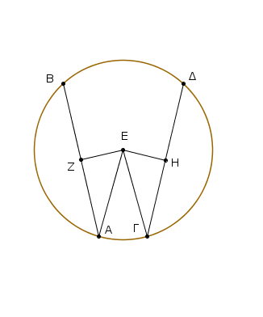
᾿Επεὶ οὖν εὐθεῖά τις δὶα τοῦ κέντρου ἡ ΕΖ εὐθεῖάν τινα μὴ διὰ τοῦ κέντρου τὴν ΑΒ πρὸς ὀρθὰς τέμνει, καὶ δίχα αὐτὴν τέμνει. ἴση ἄρα ἡ ΑΖ τῇ ΖΒ· διπλῆ ἄρα ἡ ΑΒ τῆς ΑΖ.
διὰ τὰ αὐτὰ δὴ καὶ ἡ ΓΔ τῆς ΓΗ ἐστι διπλῆ· καί ἐστιν ἴση ἡ ΑΒ τῇ ΓΔ· ἴση ἄρα καὶ ἡ ΑΖ τῇ ΓΗ. καὶ ἐπεὶ ἴση ἐστὶν ἡ ΑΕ τῇ ΕΓ, ἴσον καὶ τὸ ἀπὸ τῆς ΑΕ τῷ ἀπὸ τῆς ΕΓ. ἀλλὰ τῷ μὲν ἀπὸ τῆς ΑΕ ἴσα τὰ ἀπὸ τῶν ΑΖ, ΕΖ· ὀρθὴ γὰρ ἡ πρὸς τῷ Ζ γωνία· τῷ δὲ ἀπὸ τῆς ΕΓ ἴσα τὰ ἀπὸ τῶν ΕΗ, ΗΓ· ὀρθὴ γὰρ ἡ πρὸς τῷ Η γωνία· τὰ ἄρα ἀπὸ τῶν ΑΖ, ΖΕ ἴσα ἐστὶ τοῖς ἀπὸ τῶν ΓΗ, ΗΕ, ὧν τὸ ἀπὸ τῆς ΑΖ ἴσον ἐστὶ τῷ ἀπὸ τῆς ΓΗ· ἴση γάρ ἐστιν ἡ ΑΖ τῇ ΓΗ· λοιπὸν ἄρα τὸ ἀπὸ τῆς ΖΕ τῷ ἀπὸ τῆς ΕΗ ἴσον ἐστίν· ἴση ἄρα ἡ ΕΖ τῇ ΕΗ.
ἐν δὲ κύκλῳ ἴσον ἀπέχειν ἀπὸ τοῦ κέντρου εὐθεῖαι λέγονται, ὅταν αἱ ἀπὸ τοῦ κέντρου ἐπ᾿ αὐτὰς κάθετοι ἀγόμεναι ἴσαι ὦσιν· αἱ ἄρα ΑΒ, ΓΔ ἴσον ἀπέχουσιν ἀπὸ τοῦ κέντρου. ᾿Αλλὰ δὴ αἱ ΑΒ, ΓΔ εὐθεῖαι ἴσον ἀπεχέτωσαν ἀπὸ τοῦ κέντρου, τουτέστιν ἴση ἔστω ἡ ΕΖ τῇ ΕΗ. λέγω, ὅτι ἴση ἐστὶ καὶ ἡ ΑΒ τῇ ΓΔ.
Τῶν γὰρ αὐτῶν κατασκευασθέντων ὁμοίως δείξομεν, ὅτι διπλῆ ἐστιν ἡ μὲν ΑΒ τῆς ΑΖ, ἡ δὲ ΓΔ τῆς ΓΗ· καὶ ἐπεὶ ἴση ἐστὶν ἡ ΑΕ τῇ ΓΕ, ἴσον ἐστὶ τὸ ἀπὸ τῆς ΑΕ τῷ ἀπὸ τῆς ΓΕ· ἀλλὰ τῷ μὲν ἀπὸ τῆς ΑΕ ἴσα ἐστὶ τὰ ἀπὸ τῶν ΕΖ, ΖΑ, τῷ δὲ ἀπὸ τῆς ΓΕ ἴσα τὰ ἀπὸ τῶν ΕΗ, ΗΓ. τὰ ἄρα ἀπὸ τῶν ΕΖ, ΖΑ ἴσα ἐστὶ τοῖς ἀπὸ τῶν ΕΗ, ΗΓ· ὧν τὸ ἀπὸ τῆς ΕΖ τῷ ἀπὸ τῆς ΕΗ ἐστιν ἴσον· ἴση γὰρ ἡ ΕΖ τῇ ΕΗ· λοιπὸν ἄρα τὸ ἀπὸ τῆς ΑΖ ἴσον ἐστὶ τῷ ἀπὸ τῆς ΓΗ· ἴση ἄρα ἡ ΑΖ τῇ ΓΗ· καί ἐστι τῆς μὲν ΑΖ διπλῆ ἡ ΑΒ, τῆς δὲ ΓΗ διπλῆ ἡ ΓΔ· ἴση ἄρα ἡ ΑΒ τῇ ΓΔ.
᾿Εν κύκλῳ ἄρα αἱ ἴσαι εὐθεῖαι ἴσον ἀπέχουσιν ἀπὸ τοῦ κέντρου, καὶ αἱ ἴσον ἀπέχουσαι ἀπὸ τοῦ κέντρου ἴσαι ἀλλήλαις εἰσίν· ὅπερ ἔδει δεῖξαι.
᾿Εν κύκλῳ μεγίστη μὲν ἡ διάμετρος, τῶν δὲ ἄλλων ἀεὶ ἡ ἔγγιον τοῦ κέντρου τῆς ἀπώτερον μείζων ἐστίν.
῎Εστω κύκλος ὁ ΑΒΓΔ, διάμετρος δὲ αὐτοῦ ἔστω ἡ ΑΔ, κέντρον δὲ τὸ Ε, καὶ ἔγγιον μὲν τῆς ΑΔ διαμέτρου ἔστω ἡ ΒΓ, ἀπώτερον δὲ ἡ ΖΗ· λέγω, ὅτι μεγίστη μέν ἐστιν ἡ ΑΔ, μείζων δὲ ἡ ΒΓ τῆς ΖΗ.
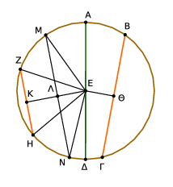
῎Ηχθωσαν γὰρ ἀπὸ τοῦ Ε κέντρου ἐπὶ τὰς ΒΓ, ΖΗ κάθετοι αἱ ΕΘ, ΕΚ. καὶ ἐπεὶ ἔγγιον μὲν τοῦ κέντρου ἐστὶν ἡ ΒΓ, ἀπώτερον δὲ ἡ ΖΗ, μείζων ἄρα ἡ ΕΚ τῆς ΕΘ. κείσθω τῇ ΕΘ ἴση ἡ ΕΛ, καὶ διὰ τοῦ Λ τῇ ΕΚ πρὸς ὀρθὰς ἀχθεῖσα ἡ ΛΜ διήχθω ἐπὶ τὸ Ν, καὶ ἐπεζεύχθωσαν αἱ ΜΕ, ΕΝ, ΖΕ, ΕΗ.
Καὶ ἐπεὶ ἴση ἐστὶν ἡ ΕΘ τῇ ΕΛ, ἴση ἐστὶ καὶ ἡ ΒΓ τῇ ΜΝ. πάλιν, ἐπεὶ ἴση ἐστὶν ἡ μὲν ΑΕ τῇ ΕΜ, ἡ δὲ ΕΔ τῇ ΕΝ, ἡ ἄρα ΑΔ ταῖς ΜΕ, ΕΝ ἴση ἐστίν. ἀλλ᾿ αἱ μὲν ΜΕ, ΕΝ τῆς ΜΝ μείζονές εἰσιν [καὶ ἡ ΑΔ τῆς ΜΝ μείζων ἐστίν], ἴση δὲ ἡ ΜΝ τῇ ΒΓ· ἡ ΑΔ ἄρα τῆς ΒΓ μείζων ἐστίν. καὶ ἐπεὶ δύο αἱ ΜΕ, ΕΝ δύο ταῖς ΖΕ, ΕΗ ἴσαι εἰσίν, καὶ γωνία ἡ ὑπὸ ΜΕΝ γωνίας τῆς ὑπὸ ΖΕΗ μείζων [ἐστίν], βάσις ἄρα ἡ ΜΝ βάσεως τῆς ΖΗ μείζων ἐστίν. ἀλλὰ ἡ ΜΝ τῇ ΒΓ ἐδείχθη ἴση [καὶ ἡ ΒΓ τῆς ΖΗ μείζων ἐστίν]. μεγίστη μὲν ἄρα ἡ ΑΔ διάμετρος, μείζων δὲ ἡ ΒΓ τῆς ΖΗ.
᾿Εν κύκλῳ ἄρα μεγίστη μὲν έστιν ἡ διάμετρος, τῶν δὲ ἄλλων ἀεὶ ἡ ἔγγιον τοῦ κέντρου τῆς ἀπώτερον μείζων ἐστίν· ὅπερ ἔδει δεῖξαι.
῾Η τῇ διαμέτρῳ τοῦ κύκλου πρὸς ὀρθὰς ἀπ᾿ ἄκρας ἀγομένη ἐκτὸς πεσεῖται τοῦ κύκλου, καὶ εἰς τὸν μεταξὺ τόπον τῆς τε εὐθείας καὶ τῆς περιφερείας ἑτέρα εὐθεῖα οὐ παρεμπεσεῖται, καὶ ἡ μὲν τοῦ ἡμικυκλίου γωνία ἁπάσης γωνίας ὀξείας εὐθυγράμμου μείζων ἐστίν, ἡ δὲ λοιπὴ ἐλάττων.
῎Εστω κύκλος ὁ ΑΒΓ περὶ κέντρον τὸ Δ καὶ διάμετρον τὴν ΑΒ· λέγω, ὅτι ἡ ἀπὸ τοῦ Α τῇ ΑΒ πρὸς ὀρθὰς ἀπ᾿ ἄκρας ἀγομένη ἐκτὸς πεσεῖται τοῦ κύκλου. Μὴ γάρ, ἀλλ᾿ εἰ δυνατόν, πιπτέτω ἐντὸς ὡς ἡ ΓΑ, καὶ ἐπεζεύχθω ἡ ΔΓ.
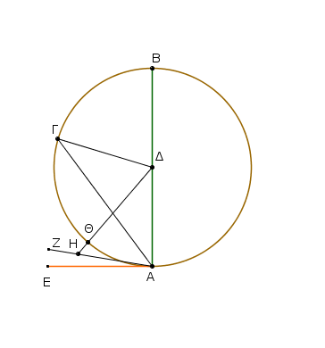
᾿Επεὶ ἴση ἐστὶν ἡ ΔΑ τῇ ΔΓ, ἴση ἐστὶ καὶ γωνία ἡ ὑπὸ ΔΑΓ γωνίᾳ τῇ ὑπὸ ΑΓΔ. ὀρθὴ δὲ ἡ ὑπὸ ΔΑΓ· ὀρθὴ ἄρα καὶ ἡ ὑπὸ ΑΓΔ· τριγώνου δὴ τοῦ ΑΓΔ αἱ δύο γωνίαι αἱ ὑπὸ ΔΑΓ, ΑΓΔ δύο ὀρθαῖς ἴσαι εἰσίν· ὅπερ ἐστὶν ἀδύνατον.
οὐκ ἄρα ἡ ἀπὸ τοῦ Α σημείου τῇ ΒΑ πρὸς ὀρθὰς ἀγομένη ἐντὸς πεσεῖται τοῦ κύκλου. ὁμοίως δὴ δεῖξομεν, ὅτι οὐδ᾿ ἐπὶ τῆς περιφερείας· ἐκτὸς ἄρα.
Πιπτέτω ὡς ἡ ΑΕ· λέγω δή, ὅτι εἰς τὸν μεταξὺ τόπον τῆς τε ΑΕ εὐθείας καὶ τῆς ΓΘΑ περιφερείας ἑτέρα εὐθεῖα οὐ παρεμπεσεῖται. Εἰ γὰρ δυνατόν, παρεμπιπτέτω ὡς ἡ ΖΑ, καὶ ἤχθω ἀπὸ τοῦ Δ σημείου ἐπὶ τῆν ΖΑ κάθετος ἡ ΔΗ. καὶ ἐπεὶ ὀρθή ἐστιν ἡ ὑπὸ ΑΗΔ, ἐλάττων δὲ ὀρθῆς ἡ ὑπὸ ΔΑΗ, μείζων ἄρα ἡ ΑΔ τῆς ΔΗ. ἴση δὲ ἡ ΔΑ τῇ ΔΘ· μείζων ἄρα ἡ ΔΘ τῆς ΔΗ, ἡ ἐλάττων τῆς μείζονος· ὅπερ ἐστὶν ἀδύνατον. οὐκ ἄρα εἰς τὸν μεταξὺ τόπον τῆς τε εὐθείας καὶ τῆς περιφερείας ἑτέρα εὐθεῖα παρεμπεσεῖται.
Λέγω, ὅτι καὶ ἡ μὲν τοῦ ἡμικυκλίου γωνία ἡ περιεχομένη ὑπό τε τῆς ΒΑ εὐθείας καὶ τῆς ΓΘΑ περιφερείας ἁπάσης γωνίας ὀξείας εὐθυγράμμου μείζων ἐστίν, ἡ δὲ λοιπὴ ἡ περιεχομένη ὑπό τε τῆς ΓΘΑ περιφερείας καὶ τῆς ΑΕ εὐθείας ἁπάσης γωνίας ὀξείας εὐθυγράμμου ἐλάττων ἐστίν.
Εἰ γὰρ ἐστί τις γωνία εὐθύγραμμος μείζων μὲν τῆς περιεχομένης ὑπό τε τῆς ΒΑ εὐθείας καὶ τῆς ΓΘΑ περιφερείας, ἐλάττων δὲ τῆς περιεχομένης ὑπό τε τῆς ΓΘΑ περιφερείας καὶ τὴς ΑΕ εὐθείας, εἰς τὸν μεταξὺ τόπον τῆς τε ΓΘΑ περιφερείας καὶ τῆς ΑΕ εὐθείας εὐθεῖα παρεμπεσεῖται, ἥτις ποιήσει μείζονα μὲν τῆς περιεχομένης ὑπὸ τε τῆς ΒΑ εὐθείας καὶ τῆς ΓΘΑ περιφερείας ὑπὸ εὐθειῶν περιεχομένην, ἐλάττονα δὲ τῆς περιεχομένης ὑπό τε τῆς ΓΘΑ περιφερείας καὶ τῆς ΑΕ εὐθείας. οὐ παρεμπίπτει δέ· οὐκ ἄρα τῆς περιεχομένης γωνίας ὑπό τε τῆς ΒΑ εὐθείας καὶ τῆς ΓΘΑ περιφερείας ἔσται μείζων ὀξεῖα ὑπὸ εὐθειῶν περιεχομένη, οὐδὲ μὴν ἐλάττων τῆς περιεχομένης ὑπό τε τῆς ΓΘΑ περιφερείας καὶ τῆς ΑΕ εὐθείας.
Πόρισμα ᾿Εκ δὴ τούτου φανερόν, ὅτι ἡ τῇ διαμέτρῳ τοῦ κύκλου πρὸς ὀρθὰς ἀπ᾿ ἄκρας ἀγομένη ἐφάπτεται τοῦ κύκλου [καὶ ὅτι εὐθεῖα κύκλου καθ᾿ ἓν μόνον ἐφάπτεται σημεῖον, ἐπειδήπερ καὶ ἡ κατὰ δύο αὐτῷ συμβάλλουσα ἐντὸς αὐτοῦ πίπτουσα ἐδείχθη]· ὅπερ ἔδει δεῖξαι.
᾿Απὸ τοῦ δοθέντος σημείου τοῦ δοθέντος κύκλου ἐφαπτομένην εὐθεῖαν γραμμὴν ἀγαγεῖν.
῎Εστω τὸ μὲν δοθὲν σημεῖον τὸ Α, ὁ δὲ δοθεὶς κύκλος ὁ ΒΓΔ· δεῖ δὴ ἀπὸ τοῦ Α σημείου τοῦ ΒΓΔ κύκλου ἐφαπτομένην εὐθεῖαν γραμμὴν ἀγαγεῖν.
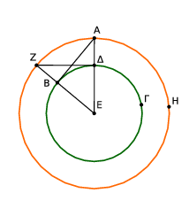
Εἰλήφθω γὰρ τὸ κέντρον τοῦ κύκλου τὸ Ε, καὶ ἐπεζεύχθω ἡ ΑΕ, καὶ κέντρῳ μὲν τῷ Ε διαστήματι δὲ τῷ ΕΑ κύκλος γεγράφθω ὁ ΑΖΗ, καὶ ἀπὸ τοῦ Δ τῇ ΕΑ πρὸς ὀρθὰς ἤχθω ἡ ΔΖ, καὶ ἐπεζεύχθωσαν αἱ ΕΖ, ΑΒ· λέγω, ὅτι ἀπὸ τοῦ Α σημείου τοῦ ΒΓΔ κύκλου ἐφαπτομένη ἦκται ἡ ΑΒ.
᾿Επεὶ γὰρ τὸ Ε κέντρον ἐστὶ τῶν ΒΓΔ, ΑΖΗ κύκλων, ἴση ἄρα ἐστὶν ἡ μὲν ΕΑ τῇ ΕΖ, ἡ δὲ ΕΔ τῇ ΕΒ· δύο δὴ αἱ ΑΕ, ΕΒ δύο ταῖς ΖΕ, ΕΔ ἴσαι εἰσίν· καὶ γωνίαν κοινὴν περιέχουσι τὴν πρὸς τῷ Ε· βάσις ἄρα ἡ ΔΖ βάσει τῇ ΑΒ ἴση ἐστίν, καὶ τὸ ΔΕΖ τρίγωνον τῷ ΕΒΑ τριγώνῳ ἴσον ἐστίν, καὶ αἱ λοιπαὶ γωνίαι ταῖς λοιπαῖς γωνίαις· ἴση ἄρα ἡ ὑπὸ ΕΔΖ τῇ ὑπὸ ΕΒΑ. ὀρθὴ δὲ ἡ ὑπὸ ΕΔΖ· ὀρθὴ ἄρα καὶ ἡ ὑπὸ ΕΒΑ. καί ἐστιν ἡ ΕΒ ἐκ τοῦ κέντρου· ἡ δὲ τῇ διαμέτρῳ τοῦ κύκλου πρὸς ὀρθὰς ἀπ᾿ ἄκρας ἀγομένη ἐφάπτεται τοῦ κύκλου· ἡ ΑΒ ἄρα ἐφάπτεται τοῦ ΒΓΔ κύκλου.
᾿Απὸ τοῦ ἄρα δοθέντος σημείου τοῦ Α τοῦ δοθέντος κύκλου τοῦ ΒΓΔ ἐφαπτομένη εὐθεῖα γραμμὴ ἦκται ἡ ΑΒ· ὅπερ ἔδει ποιῆσαι.
᾿Εὰν κύκλου ἐφάπτηταί τις εὐθεῖα, ἀπὸ δὲ τοῦ κέντρου ἐπὶ τὴν ἁφὴν ἐπιζευχθῇ τις εὐθεῖα, ἡ ἐπιζευχθεῖσα κάθετος ἔσται ἐπὶ τὴν ἐφαπτομένην.
Κύκλου γὰρ τοῦ ΑΒΓ ἐφαπτέσθω τις εὐθεῖα ἡ ΔΕ κατὰ τὸ Γ σημεῖον, καὶ εἰλήφθω τὸ κέντρον τοῦ ΑΒΓ κύκλου τὸ Ζ, καὶ ἀπὸ τοῦ Ζ ἐπὶ τὸ Γ ἐπεζεύχθω ἡ ΖΓ· λέγω, ὅτι ἡ ΖΓ κάθετός ἐστιν ἐπὶ τὴν ΔΕ.
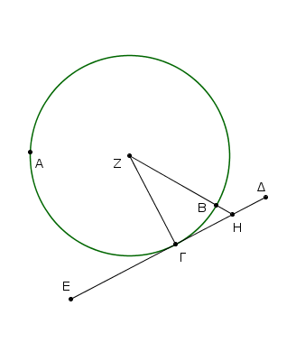
Εἰ γὰρ μή, ἤχθω ἀπὸ τοῦ Ζ ἐπὶ τὴν ΔΕ κάθετος ἡ ΖΗ.
᾿Επεὶ οὖν ἡ ὑπὸ ΖΗΓ γωνία ὀρθή ἐστιν, ὀξεῖα ἄρα ἐστὶν ἡ ὑπὸ ΖΓΗ· ὑπὸ δὲ τὴν μείζονα γωνίαν ἡ μείζων πλευρὰ ὑποτείνει· μείζων ἄρα ἡ ΖΓ τῆς ΖΗ· ἴση δὲ ἡ ΖΓ τῇ ΖΒ· μείζων ἄρα καὶ ἡ ΖΒ τῆς ΖΗ ἡ ἐλάττων τῆς μείζονος· ὅπερ ἐστὶν ἀδύνατον. οὐκ ἄρα ἡ ΖΗ κάθετός ἐστιν ἐπὶ τὴν ΔΕ.
ὁμοίως δὴ δεῖξομεν, ὅτι οὐδ᾿ ἄλλη τις πλὴν τῆς ΖΓ· ἡ ΖΓ ἄρα κάθετός ἐστιν ἐπὶ τὴν ΔΕ.
᾿Εὰν ἄρα κύκλου ἐφάπτηταί τις εὐθεῖα, ἀπὸ δὲ τοῦ κέντρου ἐπὶ τὴν ἁφὴν ἐπιζευχθῇ τις εὐθεῖα, ἡ ἐπιζευχθεῖσα κάθετος ἔσται ἐπὶ τὴν ἐφαπτομένην· ὅπερ ἔδει δεῖξαι.
᾿Εὰν κύκλου ἐφάπτηταί τις εὐθεῖα, ἀπὸ δὲ τῆς ἁφῆς τῇ ἐφαπτομένῃ πρὸς ὀρθὰς [γωνίας] εὐθεῖα γραμμὴ ἀχθῇ, ἐπὶ τῆς ἀχθείσης ἔσται τὸ κέντρον τοῦ κύκλου.
Κύκλου γὰρ τοῦ ΑΒΓ ἐφαπτέσθω τις εὐθεῖα ἡ ΔΕ κατὰ τὸ Γ σημεῖον, καὶ ἀπὸ τοῦ Γ τῇ ΔΕ πρὸς ὀρθὰς ἤχθω ἡ ΓΑ· λέγω, ὅτι ἐπὶ τῆς ΑΓ ἐστι τὸ κέντρον τοῦ κύκλου.
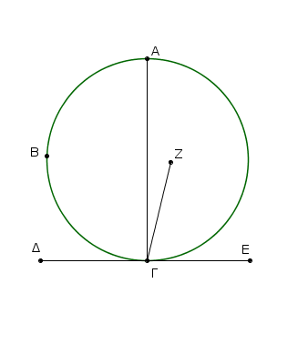
Μὴ γάρ, ἀλλ᾿ εἰ δυνατόν, ἔστω τὸ Ζ, καὶ ἐπεζεύχθω ἡ ΓΖ. ᾿Επεὶ [οὖν] κύκλου τοῦ ΑΒΓ ἐφάπτεταί τις εὐθεῖα ἡ ΔΕ, ἀπὸ δὲ τοῦ κέντρου ἐπὶ τὴν ἁφὴν ἐπέζευκται ἡ ΖΓ, ἡ ΖΓ ἄρα κάθετός ἐστιν ἐπὶ τὴν ΔΕ· ὀρθὴ ἄρα ἐστὶν ἡ ὑπὸ ΖΓΕ. ἐστὶ δὲ καὶ ἡ ὑπὸ ΑΓΕ ὀρθή· ἴση ἄρα ἐστὶν ἡ ὑπὸ ΖΓΕ τῇ ὑπὸ ΑΓΕ ἡ ἐλάττων τῇ μείζονι· ὅπερ ἐστὶν ἀδύνατον. οὐκ ἄρα τὸ Ζ κέντρον ἐστὶ τοῦ ΑΒΓ κύκλου.
ὁμοίως δὴ δείξομεν, ὅτι οὐδ᾿ ἄλλο τι πλὴν ἐπὶ τῆς ΑΓ.
᾿Εὰν ἄρα κύκλου ἐφάπτηταί τις εὐθεῖα, ἀπὸ δὲ τῆς ἁφῆς τῇ ἐφαπτομένῃ πρὸς ὀρθὰς εὐθεῖα γραμμὴ ἀχθῇ, ἐπὶ τῆς ἀχθείσης ἔσται τὸ κέντρον τοῦ κύκλου· ὅπερ ἔδει δεῖξαι.
᾿Εν κύκλῳ ἡ πρὸς τῷ κέντρῳ γωνία διπλασίων ἐστὶ τῆς πρὸς τῇ περιφερείᾳ, ὅταν τὴν αὐτὴν περιφέρειαν βάσιν ἔχωσιν αἱ γωνίαι.
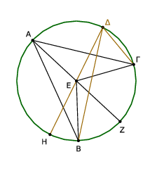
῎Εστω κύκλος ὁ ΑΒΓ, καὶ πρὸς μὲν τῷ κέντρῳ αὐτοῦ γωνία ἔστω ἡ ὑπὸ ΒΕΓ, πρὸς δὲ τῇ περιφερείᾳ ἡ ὑπὸ ΒΑΓ, ἐχέτωσαν δὲ τὴν αὐτὴν περιφέρειαν βάσιν τὴν ΒΓ· λέγω, ὅτι διπλασίων ἐστὶν ἡ ὑπὸ ΒΕΓ γωνία τῆς ὑπὸ ΒΑΓ.
᾿Επιζευχθεῖσα γὰρ ἡ ΑΕ διήχθω ἐπὶ τὸ Ζ. ᾿Επεὶ οὖν ἴση ἐστὶν ἡ ΕΑ τῇ ΕΒ, ἴση καὶ γωνία ἡ ὑπὸ ΕΑΒ τῇ ὑπὸ ΕΒΑ· αἱ ἄρα ὑπὸ ΕΑΒ, ΕΒΑ γωνίαι τῆς ὑπὸ ΕΑΒ διπλασίους εἰσίν. ἴση δὲ ἡ ὑπὸ ΒΕΖ ταῖς ὑπὸ ΕΑΒ, ΕΒΑ· καὶ ἡ ὑπὸ ΒΕΖ ἄρα τῆς ὑπὸ ΕΑΒ ἐστι διπλῆ. διὰ τὰ αὐτὰ δὴ καὶ ἡ ὑπὸ ΖΕΓ τῆς ὑπὸ ΕΑΓ ἐστι διπλῆ. ὅλη ἄρα ἡ ὑπὸ ΒΕΓ ὅλης τῆς ὑπὸ ΒΑΓ ἐστι διπλῆ.
Κεκλάσθω δὴ πάλιν, καὶ ἔστω ἑτέρα γωνία ἡ ὑπὸ ΒΔΓ, καὶ ἐπιζευχθεῖσα ἡ ΔΕ ἐκβεβλήσθω ἐπὶ τὸ Η. ὁμοίως δὴ δείξομεν, ὅτι διπλῆ ἐστιν ἡ ὑπὸ ΗΕΓ γωνία τῆς ὑπὸ ΕΔΓ, ὧν ἡ ὑπὸ ΗΕΒ διπλῆ ἐστι τῆς ὑπὸ ΕΔΒ· λοιπὴ ἄρα ἡ ὑπὸ ΒΕΓ διπλῆ ἐστι τῆς ὑπὸ ΒΔΓ.
᾿Εν κύκλῳ ἄρα ἡ πρὸς τῷ κέντρῳ γωνία διπλασίων ἐστὶ τῆς πρὸς τῇ περιφερείᾳ, ὅταν τὴν αὐτὴν περιφέρειαν βάσιν ἔχωσιν [αἱ γωνίαι]· ὅπερ ἔδει δεῖξαι.
᾿Εν κύκλῳ αἱ ἐν τῷ αὐτῷ τμήματι γωνίαι ἴσαι ἀλλήλαις εἰσίν.
῎Εστω κύκλος ὁ ΑΒΓΔ, καὶ ἐν τῷ αὐτῷ τμήματι τῷ ΒΑΕΔ γωνίαι ἔστωσαν αἱ ὑπὸ ΒΑΔ, ΒΕΔ· λέγω, ὅτι αἱ ὑπὸ ΒΑΔ, ΒΕΔ γωνίαι ἴσαι ἀλλήλαις εἰσίν.
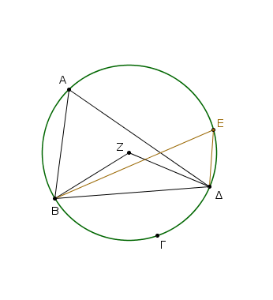
Εἰλήφθω γὰρ τοῦ ΑΒΓΔ κύκλου τὸ κέντρον, καὶ ἔστω τὸ Ζ, καὶ ἐπεζεύχθωσαν αἱ ΒΖ, ΖΔ.
Καὶ ἐπεὶ ἡ μὲν ὑπὸ ΒΖΔ γωνία πρὸς τῷ κέντρῳ ἐστίν, ἡ δὲ ὑπὸ ΒΑΔ πρὸς τῇ περιφερείᾳ, καὶ ἔχουσι τὴν αὐτὴν περιφέρειαν βάσιν τὴν ΒΓΔ, ἡ ἄρα ὑπὸ ΒΖΔ γωνία διπλασίων ἐστὶ τῆς ὑπὸ ΒΑΔ. διὰ τὰ αὐτὰ δὴ ἡ ὑπὸ ΒΖΔ καὶ τῆς ὑπὸ ΒΕΔ ἐστι διπλασίων· ἴση ἄρα ἡ ὑπὸ ΒΑΔ τῇ ὑπὸ ΒΕΔ.
᾿Εν κύκλῳ ἄρα αἱ ἐν τῷ αὐτῷ τμήματι γωνίαι ἴσαι ἀλλήλαις εἰσίν· ὅπερ ἔδει δεῖξαι.
Τῶν ἐν τοῖς κύκλοις τετραπλεύρων αἱ ἀπεναντίον γωνίαι δυσὶν ὀρθαῖς ἴσαι εἰσίν.
῎Εστω κύκλος ὁ ΑΒΓΔ, καὶ ἐν αὐτῷ τετράπλευρον ἔστω τὸ ΑΒΓΔ· λέγω, ὅτι αἱ ἀπεναντίον γωνίαι δυσὶν ὀρθαῖς ἴσαι εἰσίν.
᾿Επεζεύχθωσαν αἱ ΑΓ, ΒΔ. ᾿Επεὶ οὖν παντὸς τριγώνου αἱ τρεῖς γωνίαι δυσὶν ὀρθαῖς ἴσαι εἰσίν, τοῦ ΑΒΓ ἄρα τριγώνου αἱ τρεῖς γωνίαι αἱ ὑπὸ ΓΑΒ, ΑΒΓ, ΒΓΑ δυσὶν ὀρθαῖς ἴσαι εἰσίν.
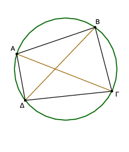
ἴση δὲ ἡ μὲν ὑπὸ ΓΑΒ τῇ ὑπὸ ΒΔΓ· ἐν γὰρ τῷ αὐτῷ τμήματί εἰσι τῷ ΒΑΔΓ· ἡ δὲ ὑπὸ ΑΓΒ τῇ ὑπὸ ΑΔΒ· ἐν γὰρ τῷ αὐτῷ τμήματί εἰσι τῷ ΑΔΓΒ· ὅλη ἄρα ἡ ὑπὸ ΑΔΓ ταῖς ὑπὸ ΒΑΓ, ΑΓΒ ἴση ἐστίν. κοινὴ προσκείσθω ἡ ὑπὸ ΑΒΓ· αἱ ἄρα ὑπὸ ΑΒΓ, ΒΑΓ, ΑΓΒ ταῖς ὑπὸ ΑΒΓ, ΑΔΓ ἴσαι εἰσίν.
ἀλλ᾿ αἱ ὑπὸ ΑΒΓ, ΒΑΓ, ΑΓΒ δυσὶν ὀρθαῖς ἴσαι εἰσίν. καὶ αἱ ὑπὸ ΑΒΓ, ΑΔΓ ἄρα δυσὶν ὀρθαῖς ἴσαι εἰσίν. ὁμοίως δὴ δείξομεν, ὅτι καὶ αἱ ὑπὸ ΒΑΔ, ΔΓΒ γωνίαι δυσὶν ὀρθαῖς ἴσαι εἰσίν.
Τῶν ἄρα ἐν τοῖς κύκλοις τετραπλεύρων αἱ ἀπεναντίον γωνίαι δυσὶν ὀρθαῖς ἴσαι εἰσίν· ὅπερ ἔδει δεῖξαι.
᾿Επὶ τῆς αὐτῆς εὐθείας δύο τμήματα κύκλων ὅμοια καὶ ἄνισα οὐ συσταθήσεται ἐπὶ τὰ αὐτὰ μέρη.
Εἰ γὰρ δυνατόν, ἐπὶ τῆς αὐτῆς εὐθείας τῆς ΑΒ δύο τμήματα κύκλων ὅμοια καὶ ἄνισα συνεστάτω ἐπὶ τὰ αὐτὰ μέρη τὰ ΑΓΒ, ΑΔΒ, καὶ διήχθω ἡ ΑΓΔ, καὶ ἐπεζεύχθωσαν αἱ ΓΒ, ΔΒ.
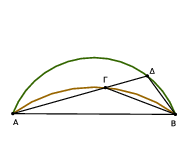
᾿Επεὶ οὖν ὅμοιόν ἐστι τὸ ΑΓΒ τμῆμα τῷ ΑΔΒ τμήματι, ὅμοια δὲ τμήματα κύκλων ἐστὶ τὰ δεχόμενα γωνίας ἴσας, ἴση ἄρα ἐστὶν ἡ ὑπὸ ΑΓΒ γωνία τῇ ὑπὸ ΑΔΒ ἡ ἐκτὸς τῇ ἐντός· ὅπερ ἐστὶν ἀδύνατον.
Οὐκ ἄρα ἐπὶ τῆς αὐτῆς εὐθείας δύο τμήματα κύκλων ὅμοια καὶ ἄνισα συσταθήσεται ἐπὶ τὰ αὐτὰ μέρη· ὅπερ ἔδει δεῖξαι.
Τὰ ἐπὶ ἴσων εὐθειῶν ὅμοια τμήματα κύκλων ἴσα ἀλλήλοις ἐστίν.
῎Εστωσαν γὰρ ἐπὶ ἴσων εὐθειῶν τῶν ΑΒ, ΓΔ ὅμοια τμήματα κύκλων τὰ ΑΕΒ, ΓΖΔ· λέγω, ὅτι ἴσον ἐστὶ τὸ ΑΕΒ τμῆμα τῷ ΓΖΔ τμήματι.
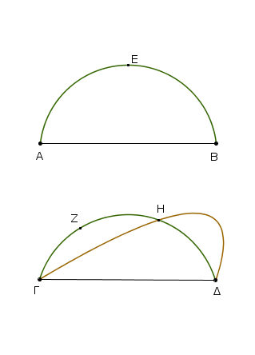
᾿Εφαρμοζομένου γὰρ τοῦ ΑΕΒ τμήματος ἐπὶ τὸ ΓΖΔ καὶ τιθεμένου τοῦ μὲν Α σημείου ἐπὶ τὸ Γ τῆς δὲ ΑΒ εὐθείας ἐπὶ τὴν ΓΔ, ἐφαρμόσει καὶ τὸ Β σημεῖον ἐπὶ τὸ Δ σημεῖον διὰ τὸ ἴσην εἶναι τὴν ΑΒ τῇ ΓΔ· τῆς δὲ ΑΒ ἐπὶ τὴν ΓΔ ἐφαρμοσάσης ἐφαρμόσει καὶ τὸ ΑΕΒ τμῆμα ἐπὶ τὸ ΓΖΔ.
εἰ γὰρ ἡ ΑΒ εὐθεῖα ἐπὶ τὴν ΓΔ ἐφαρμόσει, τὸ δὲ ΑΕΒ τμῆμα ἐπὶ τὸ ΓΖΔ μὴ ἐφαρμόσει, ἤτοι ἐντὸς αὐτοῦ πεσεῖται ἢ ἐκτὸς ἢ παραλλάξει, ὡς τὸ ΓΗΔ, καὶ κύκλος κύκλον τέμνει κατὰ πλείονα σημεῖα ἢ δύο· ὅπερ ἐστίν ἀδύνατον. οὐκ ἄρα ἐφαρμοζομένης τῆς ΑΒ εὐθείας ἐπὶ τὴν ΓΔ οὐκ ἐφαρμόσει καὶ τὸ ΑΕΒ τμῆμα ἐπὶ τὸ ΓΖΔ· ἐφαρμόσει ἄρα, καὶ ἴσον αὐτῷ ἔσται.
Τὰ ἄρα ἐπὶ ἴσων εὐθειῶν ὅμοια τμήματα κύκλων ἴσα ἀλλήλοις ἐστίν· ὅπερ ἔδει δεῖξαι.
Κύκλου τμήματος δοθέντος προσαναγράψαι τὸν κύκλον, οὗπέρ ἐστι τμῆμα.
῎Εστω τὸ δοθὲν τμῆμα κύκλου τὸ ΑΒΓ· δεῖ δὴ τοῦ ΑΒΓ τμήματος προσαναγράψαι τὸν κύκλον, οὖπέρ ἐστι τμῆμα.
Τετμήσθω γὰρ ἡ ΑΓ δίχα κατὰ τὸ Δ, καὶ ἤχθω ἀπὸ τοῦ Δ σημείου τῇ ΑΓ πρὸς ὀρθὰς ἡ ΔΒ, καὶ ἐπεζεύχθω ἡ ΑΒ· ἡ ὑπὸ ΑΒΔ γωνία ἄρα τῆς ὑπὸ ΒΑΔ ἤτοι μείζων ἐστὶν ἢ ἴση ἢ ἐλάττων.
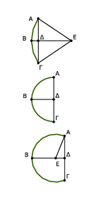
῎Εστω πρότερον μείζων, καὶ συνεστάτω πρὸς τῇ ΒΑ εὐθείᾳ καὶ τῷ πρὸς αὐτῇ σημείῳ τῷ Α τῇ ὑπὸ ΑΒΔ γωνίᾳ ἴση ἡ ὑπὸ ΒΑΕ, καὶ διήχθω ἡ ΔΒ ἐπὶ τὸ Ε, καὶ ἐπεζεύχθω ἡ ΕΓ.
ἐπεὶ οὖν ἴση ἐστὶν ἡ ὑπὸ ΑΒΕ γωνία τῇ ὑπὸ ΒΑΕ, ἴση ἄρα ἐστὶ καὶ ἡ ΕΒ εὐθεῖα τῇ ΕΑ.
καὶ ἐπεὶ ἴση ἐστὶν ἡ ΑΔ τῇ ΔΓ, κοινὴ δὲ ἡ ΔΕ, δύο δὴ αἱ ΑΔ, ΔΕ δύο ταῖς ΓΔ, ΔΕ ἴσαι εἰσὶν ἑκατέρα ἑκατέρᾳ· καὶ γωνία ἡ ὑπὸ ΑΔΕ γωνίᾳ τῇ ὑπὸ ΓΔΕ ἐστιν ἴση· ὀρθὴ γὰρ ἑκατέρα· βάσις ἄρα ἡ ΑΕ βάσει τῇ ΓΕ ἐστιν ἴση. ἀλλὰ ἡ ΑΕ τῇ ΒΕ ἐδείχθη ἴση· καὶ ἡ ΒΕ ἄρα τῇ ΓΕ ἐστιν ἴση· αἱ τρεῖς ἄρα αἱ ΑΕ, ΕΒ, ΕΓ ἴσαι ἀλλήλαις εἰσίν· ὁ ἄρα κέντρῷ τῷ Ε διαστήματι δὲ ἑνὶ τῶν ΑΕ, ΕΒ, ΕΓ κύκλος γραφόμενος ἥξει καὶ διὰ τῶν λοιπῶν σημείων καὶ ἔσται προσαναγεγραμμένος. κύκλου ἄρα τμήματος δοθέντος προσαναγέγραπται ὁ κύκλος. καὶ δῆλον, ὡς τὸ ΑΒΓ τμῆμα ἔλαττόν ἐστιν ἡμικυκλίου διὰ τὸ τὸ Ε κέντρον ἐκτὸς αὐτοῦ τυγχάνειν.
῾Ομοίως [δὲ] κἂν ᾖ ἡ ὑπὸ ΑΒΔ γωνία ἴση τῇ ὑπὸ ΒΑΔ, τῆς ΑΔ ἴσης γενομένης ἑκατέρᾳ τῶν ΒΔ, ΔΓ αἱ τρεῖς αἱ ΔΑ, ΔΒ, ΔΓ ἴσαι ἀλλήλαις ἔσονται, καὶ ἔσται τὸ Δ κέντρον τοῦ προσαναπεπληρωμένου κύκλου, καὶ δηλαδὴ ἔσται τὸ ΑΒΓ ἡμικύκλιον.
᾿Εὰν δὲ ἡ ὑπὸ ΑΒΔ ἐλάττων ᾖ τῆς ὑπὸ ΒΑΔ, καὶ συστησώμεθα πρὸς τῇ ΒΑ εὐθείᾳ καὶ τῷ πρὸς αὐτῇ σημείῳ τῷ Α τῇ ὑπὸ ΑΒΔ γωνίᾳ ἴσην, ἐντὸς τοῦ ΑΒΓ τμήματος πεσεῖται τὸ κέντρον ἐπὶ τῆς ΔΒ, καὶ ἔσται δηλαδὴ τὸ ΑΒΓ τμῆμα μεῖζον ἡμικυκλίου.
Κύκλου ἄρα τμήματος δοθέντος προσαναγέγραπται ὁ κύκλος· ὅπερ ἔδει ποιῆσαι.
᾿Εν τοῖς ἴσοις κύκλοις αἱ ἴσαι γωνίαι ἐπὶ ἴσων περιφερειῶν βεβήκασιν, ἐάν τε πρὸς τοῖς κέντροις ἐάν τε πρὸς ταῖς περιφερείαις ὦσι βεβηκυῖαι.
῎Εστωσαν ἴσοι κύκλοι οἱ ΑΒΓ, ΔΕΖ καὶ ἐν αὐτοῖς ἴσαι γωνίαι ἔστωσαν πρὸς μὲν τοῖς κέντροις αἱ ὑπὸ ΒΗΓ, ΕΘΖ, πρὸς δὲ ταῖς περιφερείαις αἱ ὑπὸ ΒΑΓ, ΕΔΖ· λέγω, ὅτι ἴση ἐστὶν ἡ ΒΚΓ περιφέρεια τῇ ΕΛΖ περιφερείᾳ.
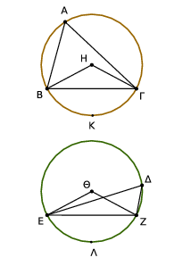
᾿Επεζεύχθωσαν γὰρ αἱ ΒΓ, ΕΖ. Καὶ ἐπεὶ ἴσοι εἰσὶν οἱ ΑΒΓ, ΔΕΖ κύκλοι, ἴσαι εἰσὶν αἱ ἐκ τῶν κέντρων· δύο δὴ αἱ ΒΗ, ΗΓ δύο ταῖς ΕΘ, ΘΖ ἴσαι· καὶ γωνία ἡ πρὸς τῷ Η γωνίᾳ τῇ πρὸς τῷ Θ ἴση· βάσις ἄρα ἡ ΒΓ βάσει τῇ ΕΖ ἐστιν ἴση. καὶ ἐπεὶ ἴση ἐστὶν ἡ πρὸς τῷ Α γωνία τῇ πρὸς τῷ Δ, ὅμοιον ἄρα ἐστὶ τὸ ΒΑΓ τμῆμα τῷ ΕΔΖ τμήματι· καί εἰσιν ἐπὶ ἴσων εὐθειῶν [τῶν ΒΓ, ΕΖ]· τὰ δὲ ἐπὶ ἴσων εὐθειῶν ὅμοια τμήματα κύκλων ἴσα ἀλλήλοις ἐστίν· ἴσον ἄρα τὸ ΒΑΓ τμῆμα τῷ ΕΔΖ. ἔστι δὲ καὶ ὅλος ὁ ΑΒΓ κύκλος ὅλῳ τῷ ΔΕΖ κύκλῳ ἴσος· λοιπὴ ἄρα ἡ ΒΚΓ περιφέρεια τῇ ΕΛΖ περιφερείᾳ ἐστὶν ἴση.
᾿Εν ἄρα τοῖς ἴσοις κύκλοις αἱ ἴσαι γωνίαι ἐπὶ ἴσων περιφερειῶν βεβήκασιν, ἐάν τε πρὸς τοῖς κέντροις ἐάν τε πρὸς ταῖς περιφερείας ὦσι βεβηκυῖαι· ὅπερ ἔδει δεῖξαι.
᾿Εν τοῖς ἴσοις κύκλοις αἱ ἐπὶ ἴσων περιφερειῶν βεβηκυῖαι γωνίαι ἴσαι ἀλλήλαις εἰσίν, ἐάν τε πρὸς τοῖς κέντροις ἐάν τε πρὸς ταῖς περιφερείαις ὦσι βεβηκυῖαι.
᾿Εν γὰρ ἴσοις κύκλοις τοῖς ΑΒΓ, ΔΕΖ ἐπὶ ἴσων περιφερειῶν τῶν ΒΓ, ΕΖ πρὸς μὲν τοῖς Η, Θ κέντροις γωνίαι βεβηκέτωσαν αἱ ὑπὸ ΒΗΓ, ΕΘΖ, πρὸς δὲ ταῖς περιφερείαις αἱ ὑπὸ ΒΑΓ, ΕΔΖ· λέγω, ὅτι ἡ μὲν ὑπὸ ΒΗΓ γωνία τῇ ὑπὸ ΕΘΖ ἐστιν ἴση, ἡ δὲ ὑπὸ ΒΑΓ τῇ ὑπὸ ΕΔΖ ἐστιν ἴση.
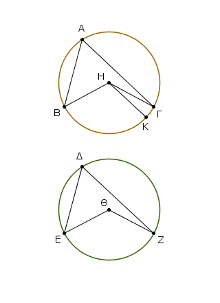
Εἰ γὰρ ἄνισός ἐστιν ἡ ὑπὸ ΒΗΓ τῇ ὑπὸ ΕΘΖ, μία αὐτῶν μείζων ἐστίν. ἔστω μείζων ἡ ὑπὸ ΒΗΓ, καὶ συνεστάτω πρὸς τῇ ΒΗ εὐθείᾳ καὶ τῷ πρὸς αὐτῇ σημείῳ τῷ Η τῇ ὑπὸ ΕΘΖ γωνίᾳ ἴση ἡ ὑπὸ ΒΗΚ·
αἱ δὲ ἴσαι γωνίαι ἐπὶ ἴσων περιφερειῶν βεβήκασιν, ὅταν πρὸς τοῖς κέντροις ὦσιν· ἴση ἄρα ἡ ΒΚ περιφέρεια τῇ ΕΖ περιφερείᾳ. ἀλλὰ ἡ ΕΖ τῇ ΒΓ ἐστιν ἴση· καὶ ἡ ΒΚ ἄρα τῇ ΒΓ ἐστιν ἴση ἡ ἐλάττων τῇ μείζονι· ὅπερ ἐστὶν ἀδύνατον.
οὐκ ἄρα ἄνισός ἐστιν ἡ ὑπὸ ΒΗΓ γωνία τῇ ὑπὸ ΕΘΖ· ἴση ἄρα. καί ἐστι τῆς μὲν ὑπὸ ΒΗΓ ἡμίσεια ἡ πρὸς τῷ Α, τῆς δὲ ὑπὸ ΕΘΖ ἡμίσεια ἡ πρὸς τῷ Δ· ἴση ἄρα καὶ ἡ πρὸς τῷ Α γωνία τῇ πρὸς τῷ Δ.
᾿Εν ἄρα τοῖς ἴσοις κύκλοις αἱ ἐπὶ ἴσων περιφερειῶν βεβηκυῖαι γωνίαι ἴσαι ἀλλήλαις εἰσίν, ἐάν τε πρὸς τοῖς κέντροις ἐάν τε πρὸς ταῖς περιφερείαις ὦσι βεβηκυῖαι· ὅπερ ἔδει δεῖξαι.
᾿Εν τοῖς ἴσοις κύκλοις αἱ ἴσαι εὐθεῖαι ἴσας περιφερείας ἀφαιροῦσι τὴν μὲν μείζονα τῇ μείζονι τὴν δὲ ἐλάττονα τῇ ἐλάττονι.
῎Εστωσαν ἴσοι κύκλοι οἱ ΑΒΓ, ΔΕΖ, καὶ ἐν τοῖς κύκλοις ἴσαι εὐθεῖαι ἔστωσαν αἱ ΑΒ, ΔΕ τὰς μὲν ΑΓΒ, ΑΖΕ περιφερείας μείζονας ἀφαιροῦσαι τὰς δὲ ΑΗΒ, ΔΘΕ ἐλάττονας·
λέγω, ὅτι ἡ μὲν ΑΓΒ μείζων περιφέρεια ἴση ἐστὶ τῇ ΔΖΕ μείζονι περιφερείᾳ ἡ δὲ ΑΗΒ ἐλάττων περιφέρεια τῇ ΔΘΕ.
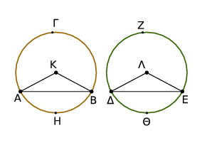
Εἰλήφθω γὰρ τὰ κέντρα τῶν κύκλων τὰ Κ, Λ, καὶ ἐπεζεύχθωσαν αἱ ΑΚ, ΚΒ, ΔΛ, ΛΕ. Καὶ ἐπεὶ ἴσοι κύκλοι εἰσίν, ἴσαι εἰσὶ καὶ αἱ ἐκ τῶν κέντρων· δύο δὴ αἱ ΑΚ, ΚΒ δυσὶ ταῖς ΔΛ, ΛΕ ἴσαι εἰσίν· καὶ βάσις ἡ ΑΒ βάσει τῇ ΔΕ ἴση· γωνία ἄρα ἡ ὑπὸ ΑΚΒ γωνίᾳ τῇ ὑπὸ ΔΛΕ ἴση ἐστίν. αἱ δὲ ἴσαι γωνίαι ἐπὶ ἴσων περιφερειῶν βεβήκασιν, ὅταν πρὸς τοῖς κέντροις ὦσιν· ἴση ἄρα ἡ ΑΗΒ περιφέρεια τῇ ΔΘΕ. ἐστὶ δὲ καὶ ὅλος ὁ ΑΒΓ κύκλος ὅλῳ τῷ ΔΕΖ κύκλῳ ἴσος· καὶ λοιπὴ ἄρα ἡ ΑΓΒ περιφέρεια λοιπῇ τῇ ΔΖΕ περιφερείᾳ ἴση ἐστίν.
᾿Εν ἄρα τοῖς ἴσοις κύκλοις αἱ ἴσαι εὐθεῖαι ἴσας περιφερείας ἀφαιροῦσι τὴν μὲν μείζονα τῇ μείζονι τὴν δὲ ἐλάττονα τῇ ἐλάττονι· ὅπερ ἔδει δεῖξαι.
᾿Εν τοῖς ἴσοις κύκλοις τὰς ἴσας περιφερείας ἴσαι εὐθεῖαι ὑποτείνουσιν.
῎Εστωσαν ἴσοι κύκλοι οἱ ΑΒΓ, ΔΕΖ, καὶ ἐν αὐτοῖς ἴσαι περιφέρειαι ἀπειλήφθωσαν αἱ ΒΗΓ, ΕΘΖ, καὶ ἐπεζεύχθωσαν αἱ ΒΓ, ΕΖ εὐθεῖαι· λέγω, ὅτι ἴση ἐστὶν ἡ ΒΓ τῇ ΕΖ.
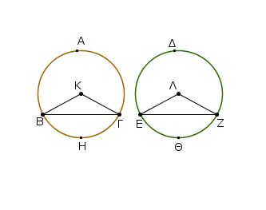
Εἰλήφθω γὰρ τὰ κέντρα τῶν κύκλων, καὶ ἔστω τὰ Κ, Λ, καὶ ἐπεζεύχθωσαν αἱ ΒΚ, ΚΓ, ΕΛ, ΛΖ. Καὶ ἐπεὶ ἴση ἐστὶν ἡ ΒΗΓ περιφέρεια τῇ ΕΘΖ περιφερείᾳ,ἴση ἐστὶ καὶ γωνία ἡ ὑπὸ ΒΚΓ τῇ ὑπὸ ΕΛΖ. καὶ ἐπεὶ ἴσοι εἰσὶν οἱ ΑΒΓ, ΔΕΖ κύκλοι, ἴσαι εἰσὶ καὶ αἱ ἐκ τῶν κέντρων· δύο δὴ αἱ ΒΚ, ΚΓ δυσὶ ταῖς ΕΛ, ΛΖ ἴσαι εἰσίν· καὶ γωνίας ἴσας περιέχουσιν· βάσις ἄρα ἡ ΒΓ βάσει τῇ ΕΖ ἴση ἐστίν·
᾿Εν ἄρα τοῖς ἴσοις κύκλοις τὰς ἴσας περιφερείας ἴσαι εὐθεῖαι ὑποτείνουσιν· ὅπερ ἔδει δεῖξαι.
Τὴν δοθεῖσαν περιφέρειαν δίχα τεμεῖν.
῎Εστω ἡ δοθεῖσα περιφέρεια ἡ ΑΔΒ· δεῖ δὴ τὴν ΑΔΒ περιφέρειαν δίχα τεμεῖν. ᾿Επεζεύχθω ἡ ΑΒ, καὶ τετμήσθω δίχα κατὰ τὸ Γ, καὶ ἀπὸ τοῦ Γ σημείου τῇ ΑΒ εὐθείᾳ πρὸς ὀρθὰς ἤχθω ἡ ΓΔ, καὶ ἐπεζεύχθωσαν αἱ ΑΔ, ΔΒ.
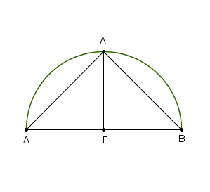
Καὶ ἐπεὶ ἴση ἐστὶν ἡ ΑΓ τῇ ΓΒ, κοινὴ δὲ ἡ ΓΔ, δύο δὴ αἱ ΑΓ, ΓΔ δυσὶ ταῖς ΒΓ, ΓΔ ἴσαι εἰσίν· καὶ γωνία ἡ ὑπὸ ΑΓΔ γωνίᾳ τῇ ὑπὸ ΒΓΔ ἴση· ὀρθὴ γὰρ ἑκατέρα· βάσις ἄρα ἡ ΑΔ βάσει τῇ ΔΒ ἴση ἐστίν. αἱ δὲ ἴσαι εὐθεῖαι ἴσας περιφερείας ἀφαιροῦσι τὴν μὲν μείζονα τῇ μείζονι τὴν δὲ ἐλάττονα τῇ ἐλάττονι· κάι ἐστιν ἑκατέρα τῶν ΑΔ, ΔΒ περιφερειῶν ἐλάττων ἡμικυκλίου· ἴση ἄρα ἡ ΑΔ περιφέρεια τῇ ΔΒ περιφερείᾳ. ῾Η ἄρα δοθεῖσα περιφέρεια δίχα τέτμηται κατὰ τὸ Δ σημεῖον· ὅπερ ἔδει ποιῆσαι.
᾿Εν κύκλῳ ἡ μὲν ἐν τῷ ἡμικυκλίῳ γωνία ὀρθή ἐστιν, ἡ δὲ ἐν τῷ μείζονι τμήματι ἐλάττων ὀρθῆς, ἡ δὲ ἐν τῷ ἐλάττονι τμήματι μείζων ὀρθῆς· καὶ ἔπι ἡ μὲν τοῦ μείζονος τμήματος γωνία μείζων ἐστὶν ὀρθῆς, ἡ δὲ τοῦ ἐλάττονος τμήματος γωνία ἐλάττων ὀρθῆς.
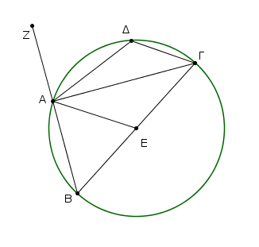
῎Εστω κύκλος ὁ ΑΒΓΔ, διάμετρος δὲ αὐτοῦ ἔστω ἡ ΒΓ, κέντρον δὲ τὸ Ε, καὶ ἐπεζεύχθωσαν αἱ ΒΑ, ΑΓ, ΑΔ, ΔΓ· λέγω, ὅτι ἡ μὲν ἐν τῷ ΒΑΓ ἡμικυκλίῳ γωνία ἡ ὑπὸ ΒΑΓ ὀρθή ἐστιν, ἡ δὲ ἐν τῷ ΑΒΓ μείζονι τοῦ ἡμικυκλίου τμήματι γωνία ἡ ὑπὸ ΑΒΓ ἐλάττων ἐστὶν ὀρθῆς, ἡ δὲ ἐν τῷ ΑΔΓ ἐλάττονι τοῦ ἡμικυκλίου τμήματι γωνία ἡ ὑπὸ ΑΔΓ μείζων ἐστὶν ὀρθῆς.
᾿Επεζεύχθω ἡ ΑΕ, καὶ διήχθω ἡ ΒΑ ἐπὶ τὸ Ζ. Καὶ ἐπεὶ ἴση ἐστὶν ἡ ΒΕ τῇ ΕΑ, ἴση ἐστὶ καὶ γωνία ἡ ὑπὸ ΑΒΕ τῇ ὑπὸ ΒΑΕ. πάλιν, ἐπεὶ ἴση ἐστὶν ἡ ΓΕ τῇ ΕΑ, ἴση ἐστὶ καὶ ἡ ὑπὸ ΑΓΕ τῇ ὑπὸ ΓΑΕ· ὅλη ἄρα ἡ ὑπὸ ΒΑΓ δυσὶ ταῖς ὑπὸ ΑΒΓ, ΑΓΒ ἴση ἐστίν. ἐστὶ δὲ καὶ ἡ ὑπὸ ΖΑΓ ἐκτὸς τοῦ ΑΒΓ τριγώνου δυσὶ ταῖς ὑπὸ ΑΒΓ, ΑΓΒ γωνίαις ἴση· ἴση ἄρα καὶ ἡ ὑπὸ ΒΑΓ γωνία τῇ ὑπὸ ΖΑΓ· ὀρθὴ ἄρα ἑκατέρα· ἡ ἄρα ἐν τῷ ΒΑΓ ἡμικυκλίῳ γωνία ἡ ὑπὸ ΒΑΓ ὀρθή ἐστιν.
Καὶ ἐπεὶ τοῦ ΑΒΓ τρίγωνου δύο γωνίαι αἱ ὑπὸ ΑΒΓ, ΒΑΓ δύο ὀρθῶν ἐλάττονές εἰσιν, ὀρθὴ δὲ ἡ ὑπὸ ΒΑΓ, ἐλάττων ἄρα ὀρθῆς ἐστιν ἡ ὑπὸ ΑΒΓ γωνία· καί ἐστιν ἐν τῷ ΑΒΓ μείζονι τοῦ ἡμικυκλίου τμήματι.
Καὶ ἐπεὶ ἐν κύκλῳ τετράπλευρόν ἐστι τὸ ΑΒΓΔ, τῶν δὲ ἐν τοῖς κύκλοις τετραπλεύρων αἱ ἀπεναντίον γωνίαι δυσὶν ὀρθαῖς ἴσαι εἰσίν [αἱ ἄρα ὑπὸ ΑΒΓ, ΑΔΓ γωνίαι δυσὶν ὀρθαῖς ἴσας εἰσίν], καί ἐστιν ἡ ὑπὸ ΑΒΓ ἐλάττων ὀρθῆς· λοιπὴ ἄρα ἡ ὑπὸ ΑΔΓ γωνία μείζων ὀρθῆς ἐστιν· καί ἐστιν ἐν τῷ ΑΔΓ ἐλάττονι τοῦ ἡμικυκλίου τμήματι.
Λέγω, ὅτι καὶ ἡ μὲν τοῦ μείζονος τμήματος γωνία ἡ περιεχομένη ὑπό [τε] τῆς ΑΒΓ περιφερείας καὶ τῆς ΑΓ εὐθείας μείζων ἐστὶν ὀρθῆς, ἡ δὲ τοῦ ἐλάττονος τμήματος γωνία ἡ περιεχομένη ὑπό [τε] τῆς ΑΔ[Γ] περιφερείας καὶ τῆς ΑΓ εὐθείας ἐλάττων ἐστὶν ὀρθῆς. καί ἐστιν αὐτόθεν φανερόν. ἐπεὶ γὰρ ἡ ὑπὸ τῶν ΒΑ, ΑΓ εὐθειῶν ὀρθή ἐστιν, ἡ ἄρα ὑπὸ τῆς ΑΒΓ περιφερείας καὶ τῆς ΑΓ εὐθείας περιεχομένη μείζων ἐστὶν ὀρθῆς. πάλιν, ἐπεὶ ἡ ὑπὸ τῶν ΑΓ, ΑΖ εὐθειῶν ὀρθή ἐστιν, ἡ ἄρα ὑπὸ τῆς ΓΑ εὐθείας καὶ τῆς ΑΔ[Γ] περιφερείας περιεχομένη ἐλάττων ἐστὶν ὀρθῆς.
᾿Εν κύκλῳ ἄρα ἡ μὲν ἐν τῷ ἡμικυκλίῳ γωνία ὀρθή ἐστιν, ἡ δὲ ἐν τῷ μείζονι τμήματι ἐλάττων ὀρθῆς, ἡ δὲ ἐν τῷ ἐλάττονι [τμήματι] μείζων ὀρθῆς· καὶ ἔπι ἡ μὲν τοῦ μείζονος τμήματος [γωνία] μείζων [ἐστὶν] ὀρθῆς, ἡ δὲ τοῦ ἐλάττονος τμήματος [γωνία] ἐλάττων ὀρθῆς· ὅπερ ἔδει δεῖξαι.
᾿Εὰν κύκλου ἐφάπτηταί τις εὐθεῖα, ἀπὸ δὲ τῆς ἁφῆς εἰς τὸν κύκλον διαχθῇ τις εὐθεῖα τέμνουσα τὸν κύκλον, ἃς ποιεῖ γωνίας πρὸς τῇ ἐφαπτομένῃ, ἴσαι ἔσονται ταῖς ἐν τοῖς ἐναλλὰξ τοῦ κύκλου τμήμασι γωνίαις.
Κύκλου γὰρ τοῦ ΑΒΓΔ ἐφαπτέσθω τις εὐθεῖα ἡ ΕΖ κατὰ τὸ Β σημεῖον, καὶ ἀπὸ τοῦ Β σημείου διήχθω τις εὐθεῖα εἰς τὸν ΑΒΓΔ κύκλον τέμνουσα αὐτὸν ἡ ΒΔ. λέγω, ὅτι ἃς ποιεῖ γωνίας ἡ ΒΔ μετὰ τῆς ΕΖ ἐφαπτομένης, ἴσας ἔσονται ταῖς ἐν τοῖς ἐναλλὰξ τμήμασι τοῦ κύκλου γωνίαις, τουτέστιν, ὅτι ἡ μὲν ὑπὸ ΖΒΔ γωνία ἴση ἐστὶ τῇ ἐν τῷ ΒΑΔ τμήματι συνισταμένῃ γωνίᾳ, ἡ δὲ ὑπὸ ΕΒΔ γωνία ἴση ἐστὶ τῇ ἐν τῷ ΔΓΒ τμήματι συνισταμένῃ γωνίᾳ.
῎Ηχθω γὰρ ἀπὸ τοῦ Β τῇ ΕΖ πρὸς ὀρθὰς ἡ ΒΑ, καὶ εἰλήφθω ἐπὶ τῆς ΒΔ περιφερείας τυχὸν σημεῖον τὸ Γ, καὶ ἐπεζεύχθωσαν αἱ ΑΔ, ΔΓ, ΓΒ.
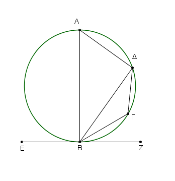
Καὶ ἐπεὶ κύκλου τοῦ ΑΒΓΔ ἐφάπτεταί τις εὐθεῖα ἡ ΕΖ κατὰ τὸ Β, καὶ ἀπὸ τῆς ἁφῆς ἦκται τῇ ἐφαπτομένῃ πρὸς ὀρθὰς ἡ ΒΑ, ἐπὶ τῆς ΒΑ ἄρα τὸ κέντρον ἐστὶ τοῦ ΑΒΓΔ κύκλου.
ἡ ΒΑ ἄρα διάμετός ἐστι τοῦ ΑΒΓΔ κύκλου· ἡ ἄρα ὑπὸ ΑΔΒ γωνία ἐν ἡμικυκλίῳ οὖσα ὀρθή ἐστιν. λοιπαὶ ἄρα αἱ ὑπὸ ΒΑΔ, ΑΒΔ μιᾷ ὀρθῇ ἴσαι εἰσίν. ἐστὶ δὲ καὶ ἡ ὑπὸ ΑΒΖ ὀρθή· ἡ ἄρα ὑπὸ ΑΒΖ ἴση ἐστὶ ταῖς ὑπὸ ΒΑΔ, ΑΒΔ. κοινὴ ἀφῃρήσθω ἡ ὑπὸ ΑΒΔ· λοιπὴ ἄρα ἡ ὑπὸ ΔΒΖ γωνία ἴση ἐστὶ τῇ ἐν τῷ ἐναλλὰξ τμήματι τοῦ κύκλου γωνίᾳ τῇ ὑπὸ ΒΑΔ.
καὶ ἐπεὶ ἐν κύκλῳ τετράπλευρόν ἐστι τὸ ΑΒΓΔ, αἱ ἀπεναντίον αὐτοῦ γωνίαι δυσὶν ὀρθαῖς ἴσαι εἰσίν. εἰσὶ δὲ καὶ αἱ ὑπὸ ΔΒΖ, ΔΒΕ δυσὶν ὀρθαῖς ἴσαι·
αἱ ἄρα ὑπὸ ΔΒΖ, ΔΒΕ ταῖς ὑπὸ ΒΑΔ, ΒΓΔ ἴσαι εἰσίν, ὧν ἡ ὑπὸ ΒΑΔ τῇ ὑπὸ ΔΒΖ ἐδείχθη ἴση· λοιπὴ ἄρα ἡ ὑπὸ ΔΒΕ τῇ ἐν τῷ ἐναλλὰξ τοῦ κύκλου τμήματι τῷ ΔΓΒ τῇ ὑπὸ ΔΓΒ γωνίᾳ ἐστὶν ἴση.
᾿Εὰν ἄρα κύκλου ἐφάπτηταί τις εὐθεῖα, ἀπὸ δὲ τῆς ἁφῆς εἰς τὸν κύκλον διαχθῇ τις εὐθεῖα τέμνουσα τὸν κύκλον, ἃς ποιεῖ γωνίας πρὸς τῇ ἐφαπτομένῃ, ἴσαι ἔσονται ταῖς ἐν τοῖς ἐναλλὰξ τοῦ κύκλου τμήμασι γωνίαις· ὅπερ ἔδει δεῖξαι.
᾿Επὶ τῆς δοθείσης εὐθείας γράψαι τμῆμα κύκλου δεχόμενον γωνίαν ἴσην τῇ δοθείσῃ γωνίᾳ εὐθυγράμμῳ.
῎Εστω ἡ δοθεῖσα εὐθεῖα ἡ ΑΒ, ἡ δὲ δοθεῖσα γωνία εὐθύγραμμος ἡ πρὸς τῷ Γ· δεῖ δὴ ἐπὶ τῆς δοθείσης εὐθείας τῆς ΑΒ γράψαι τμῆμα κύκλου δεχόμενον γωνίαν ἴσην τῇ πρὸς τῷ Γ. ῾Η δὴ πρὸς τῷ Γ [γωνία] ἤτοι ὀξεῖά ἐστιν ἢ ὀρθὴ ἢ ἀμβλεῖα· ἔστω πρότερον ὀξεῖα, καὶ ὡς ἐπὶ τῆς πρώτης καταγραφῆς συνεστάτω πρὸς τῇ ΑΒ εὐθείᾳ καὶ τῷ Α σημείῳ τῇ πρὸς τῷ Γ γωνίᾳ ἴση ἡ ὑπὸ ΒΑΔ· ὀξεῖα ἄρα ἐστὶ καὶ ἡ ὑπὸ ΒΑΔ.
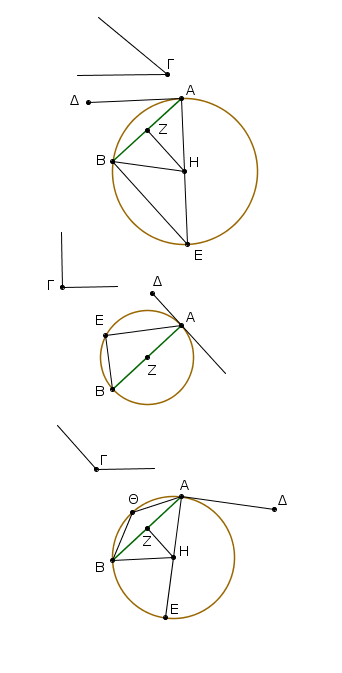
ἤχθω τῇ ΔΑ πρὸς ὀρθὰς ἡ ΑΕ, καὶ τετμήσθω ἡ ΑΒ δίχα κατὰ τὸ Ζ, καὶ ἤχθω ἀπὸ τοῦ Ζ σημείου τῇ ΑΒ πρὸς ὀρθὰς ἡ ΖΗ, καὶ ἐπεζεύχθω ἡ ΗΒ.
Καὶ ἐπεὶ ἴση ἐστὶν ἡ ΑΖ τῇ ΖΒ, κοινὴ δὲ ἡ ΖΗ, δύο δὴ αἱ ΑΖ, ΖΗ δύο ταῖς ΒΖ, ΖΗ ἴσαι εἰσίν· καὶ γωνία ἡ ὑπὸ ΑΖΗ [γωνίᾳ] τῇ ὑπὸ ΒΖΗ ἴση· βάσις ἄρα ἡ ΑΗ βάσει τῇ ΒΗ ἴση ἐστίν. ὁ ἄρα κέντρῳ μὲν τῷ Η διαστήματι δὲ τῷ ΗΑ κύκλος γραφόμενος ἥξει καὶ διὰ τοῦ Β. γεγράφθω καὶ ἔστω ὁ ΑΒΕ, καὶ ἐπεζεύχθω ἡ ΕΒ.
ἐπεὶ οὖν ἀπ᾿ ἄκρας τῆς ΑΕ διαμέτρου ἀπὸ τοῦ Α τῇ ΑΕ πρὸς ὀρθάς ἐστιν ἡ ΑΔ, ἡ ΑΔ ἄρα ἐφάπτεται τοῦ ΑΒΕ κύκλου· ἐπεὶ οὖν κύκλου τοῦ ΑΒΕ ἐφάπτεταί τις εὐθεῖα ἡ ΑΔ, καὶ ἀπὸ τῆς κατὰ τὸ Α ἁφῆς εἰς τὸν ΑΒΕ κύκλον διῆκταί τις εὐθεῖα ἡ ΑΒ, ἡ ἄρα ὑπὸ ΔΑΒ γωνία ἴση ἐστὶ τῇ ἐν τῷ ἐναλλὰξ τοῦ κύκλου τμήματι γωνίᾳ τῇ ὑπὸ ΑΕΒ. ἀλλ᾿ ἡ ὑπὸ ΔΑΒ τῇ πρὸς τῷ Γ ἐστιν ἴση· καὶ ἡ πρὸς τῷ Γ ἄρα γωνία ἴση ἐστὶ τῇ ὑπὸ ΑΕΒ. ᾿Επὶ τῆς δοθείσης ἄρα εὐθείας τῆς ΑΒ τμῆμα κύκλου γέγραπται τὸ ΑΕΒ δεχόμενον γωνίαν τὴν ὑπὸ ΑΕΒ ἴσην τῇ δοθείσῃ τῇ πρὸς τῷ Γ.
᾿Αλλὰ δὴ ὀρθὴ ἔστω ἡ πρὸς τῷ Γ· καὶ δέον πάλιν ἔστω ἐπὶ τῆς ΑΒ γράψαι τμῆμα κύκλου δεχόμενον γωνίαν ἴσην τῇ πρὸς τῷ Γ ὀρθῇ [γωνίᾳ]. συνεστάτω [πάλιν] τῇ πρὸς τῷ Γ ὀρθῇ γωνίᾳ ἴση ἡ ὑπὸ ΒΑΔ, ὡς ἔχει ἐπὶ τῆς δευτέρας καταγραφῆς, καὶ τετμήσθω ἡ ΑΒ δίχα κατὰ τὸ Ζ, καὶ κέντρῳ τῷ Ζ, διαστήματι δὲ ὁποτέρῳ τῶν ΖΑ, ΖΒ, κύκλος γεγράφθω ὁ ΑΕΒ.
᾿Εφάπτεται ἄρα ἡ ΑΔ εὐθεῖα τοῦ ΑΒΕ κύκλου διὰ τὸ ὀρθὴν εἶναι τὴν πρὸς τῷ Α γωνίαν. καὶ ἴση ἐστὶν ἡ ὑπὸ ΒΑΔ γωνία τῇ ἐν τῷ ΑΕΒ τμήματι· ὀρθὴ γὰρ καὶ αὐτὴ ἐν ἡμικυκλίῳ οὖσα. ἀλλὰ καὶ ἡ ὑπὸ ΒΑΔ τῇ πρὸς τῷ Γ ἴση ἐστίν. καὶ ἡ ἐν τῷ ΑΕΒ ἄρα ἴση ἐστὶ τῇ πρὸς τῷ Γ.
Γέγραπται ἄρα πάλιν ἐπὶ τῆς ΑΒ τμῆμα κύκλου τὸ ΑΕΒ δεχόμενον γωνίαν ἴσην τῇ πρὸς τῷ Γ.
᾿Αλλὰ δὴ ἡ πρὸς τῷ Γ ἀμβλεῖα ἔστω· καὶ συνεστάτω αὐτῇ ἴση πρὸς τῇ ΑΒ εὐθείᾳ καὶ τῷ Α σημείῳ ἡ ὑπὸ ΒΑΔ, ὡς ἔχει ἐπὶ τῆς τρίτης καταγραφῆς, καὶ τῇ ΑΔ πρὸς ὀρθὰς ἤχθω ἡ ΑΕ, καὶ τετμήσθω πάλιν ἡ ΑΒ δίχα κατὰ τὸ Ζ, καὶ τῇ ΑΒ πρὸς ὀρθὰς ἤχθω ἡ ΖΗ, καὶ ἐπεζεύχθω ἡ ΗΒ.
Καὶ ἐπεὶ πάλιν ἴση ἐστὶν ἡ ΑΖ τῇ ΖΒ, καὶ κοινὴ ἡ ΖΗ, δύο δὴ αἱ ΑΖ, ΖΗ δύο ταῖς ΒΖ, ΖΗ ἴσαι εἰσίν· καὶ γωνία ἡ ὑπὸ ΑΖΗ γωνίᾳ τῇ ὑπὸ ΒΖΗ ἴση· βάσις ἄρα ἡ ΑΗ βάσει τῇ ΒΗ ἴση ἐστίν· ὁ ἄρα κέντρῳ μὲν τῷ Η διαστήματι δὲ τῷ ΗΑ κύκλος γραφόμενος ἥξει καὶ διὰ τοῦ Β. ἐρχέσθω ὡς ὁ ΑΕΒ.
καὶ ἐπεὶ τῇ ΑΕ διαμέτρῳ ἀπ᾿ ἄκρας πρὸς ὀρθάς ἐστιν ἡ ΑΔ, ἡ ΑΔ ἄρα ἐφάπτεται τοῦ ΑΕΒ κύκλου. καὶ ἀπὸ τῆς κατὰ τὸ Α ἐπαφῆς διῆκται ἡ ΑΒ· ἡ ἄρα ὑπὸ ΒΑΔ γωνία ἴση ἐστὶ τῇ ἐν τῷ ἐναλλὰξ τοῦ κύκλου τμήματι τῷ ΑΘΒ συνισταμένῃ γωνίᾳ. ἀλλ᾿ ἡ ὑπὸ ΒΑΔ γωνία τῇ πρὸς τῷ Γ ἴση ἐστίν. καὶ ἡ ἐν τῷ ΑΘΒ ἄρα τμήματι γωνία ἴση ἐστὶ τῇ πρὸς τῷ Γ.
᾿Επὶ τῆς ἄρα δοθείσης εὐθείας τῆς ΑΒ γέγραπται τμῆμα κύκλου τὸ ΑΘΒ δεχόμενον γωνίαν ἴσην τῇ πρὸς τῷ Γ· ὅπερ ἔδει ποιῆσαι.
᾿Απὸ τοῦ δοθέντος κύκλου τμῆμα ἀφελεῖν δεχόμενον γωνίαν ἴσην τῇ δοθείσῃ γωνίᾳ εὐθυγράμμῳ.
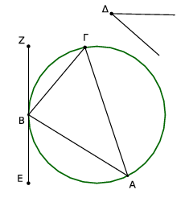
῎Εστω ὁ δοθεὶς κύκλος ὁ ΑΒΓ, ἡ δὲ δοθεῖσα γωνία εὐθύγραμμος ἡ πρὸς τῷ Δ· δεῖ δὴ ἀπὸ τοῦ ΑΒΓ κύκλου τμῆμα ἀφελεῖν δεχόμενον γωνίαν ἴσην τῇ δοθείσῃ γωνίᾳ εὐθυγράμμῳ τῇ πρὸς τῷ Δ.
῎Ηχθω τοῦ ΑΒΓ ἐφαπτομένη ἡ ΕΖ κατὰ τὸ Β σημεῖον, καὶ συνεστάτω πρὸς τῇ ΖΒ εὐθείᾳ καὶ τῷ πρὸς αὐτῇ σημείῳ τῷ Β τῇ πρὸς τῷ Δ γωνίᾳ ἴση ἡ ὑπὸ ΖΒΓ.
᾿Επεὶ οὖν κύκλου τοῦ ΑΒΓ ἐφάπτεταί τις εὐθεῖα ἡ ΕΖ, καὶ ἀπὸ τῆς κατὰ τὸ Β ἐπαφῆς διῆκται ἡ ΒΓ, ἡ ὑπὸ ΖΒΓ ἄρα γωνία ἴση ἐστὶ τῇ ἐν τῷ ΒΑΓ ἐναλλὰξ τμήματι συνισταμένῃ γωνίᾳ. ἀλλ᾿ ἡ ὑπὸ ΖΒΓ τῇ πρὸς τῷ Δ ἐστιν ἴση· καὶ ἡ ἐν τῷ ΒΑΓ ἄρα τμήματι ἴση ἐστὶ τῇ πρὸς τῷ Δ [γωνίᾳ].
᾿Απὸ τοῦ δοθέντος ἄρα κύκλου τοῦ ΑΒΓ τμῆμα ἀφῄρηται τὸ ΒΑΓ δεχόμενον γωνίαν ἴσην τῇ δοθείσῃ γωνίᾳ εὐθυγράμμῳ τῇ πρὸς τῷ Δ· ὅπερ ἔδει ποιῆσαι.
᾿Εὰν ἐν κύκλῳ δύο εὐθεῖαι τέμνωσιν ἀλλήλας, τὸ ὑπὸ τῶν τῆς μιᾶς τμημάτων περιεχόμενον ὀρθογώνιον ἴσον ἐστὶ τῷ ὑπὸ τῶν τῆς ἑτέρας τμημάτων περιεχομένῳ ὀρθογωνίῳ.
᾿Εν γὰρ κύκλῳ τῷ ΑΒΓΔ δύο εὐθεῖαι αἱ ΑΓ, ΒΔ τεμνέτωσαν ἀλλήλας κατὰ τὸ Ε σημεῖον· λέγω, ὅτι τὸ ὑπὸ τῶν ΑΕ, ΕΓ περιεχόμενον ὀρθογώνιον ἴσον ἐστὶ τῷ ὑπὸ τῶν ΔΕ, ΕΒ περιεχομένῳ ὀρθογωνίῳ.
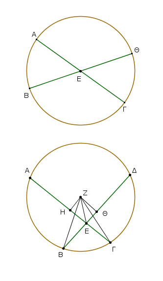
Εἰ μὲν οὖν αἱ ΑΓ, ΒΔ διὰ τοῦ κέντρου εἰσὶν ὥστε τὸ Ε κέντρον εἶναι τοῦ ΑΒΓΔ κύκλου, φανερόν, ὅτι ἴσων οὐσῶν τῶν ΑΕ, ΕΓ, ΔΕ, ΕΒ καὶ τὸ ὑπὸ τῶν ΑΕ, ΕΓ περιεχόμενον ὀρθογώνιον ἴσον ἐστὶ τῷ ὑπὸ τῶν ΔΕ, ΕΒ περιεχομένῳ ὀρθογωνίῳ.
Μὴ ἔστωσαν δὴ αἱ ΑΓ, ΔΒ διὰ τοῦ κέντρου, καὶ εἰλήφθω τὸ κέντρον τοῦ ΑΒΓΔ, καὶ ἔστω τὸ Ζ, καὶ ἀπὸ τοῦ Ζ ἐπὶ τὰς ΑΓ, ΔΒ εὐθείας κάθετοι ἤχθωσαν αἱ ΖΗ, ΖΘ, καὶ ἐπεζεύχθωσαν αἱ ΖΒ, ΖΓ, ΖΕ.
Καὶ ἐπεὶ εὐθεῖά τις διὰ τοῦ κέντρου ἡ ΗΖ εὐθεῖάν τινα μὴ διὰ τοῦ κέντρου τὴν ΑΓ πρὸς ὀρθὰς τέμνει, καὶ δίχα αὐτὴν τέμνει· ἴση ἄρα ἡ ΑΗ τῇ ΗΓ. ἐπεὶ οὖν εὐθεῖα ἡ ΑΓ τέτμηται εἰς μὲν ἴσα κατὰ τὸ Η, εἰς δὲ ἄνισα κατὰ τὸ Ε, τὸ ἄρα ὑπὸ τῶν ΑΕ, ΕΓ περιεχόμενον ὀρθογώνιον μετὰ τοῦ ἀπὸ τῆς ΕΗ τετραγώνου ἴσον ἐστὶ τῷ ἀπὸ τῆς ΗΓ· [κοινὸν] προσκείσθω τὸ ἀπὸ τῆς ΗΖ· τὸ ἄρα ὑπὸ τῶν ΑΕ, ΕΓ μετὰ τῶν ἀπὸ τῶν ΗΕ, ΗΖ ἴσον ἐστὶ τοῖς ἀπὸ τῶν ΓΗ, ΗΖ. ἀλλὰ τοῖς μὲν ἀπὸ τῶν ΕΗ, ΗΖ ἴσον ἐστὶ τὸ ἀπὸ τῆς ΖΕ, τοὶς δὲ ἀπὸ τῶν ΓΗ, ΗΖ ἴσον ἐστὶ τὸ ἀπὸ τῆς ΖΓ· τὸ ἄρα ὑπὸ τῶν ΑΕ, ΕΓ μετὰ τοῦ ἀπὸ τῆς ΖΕ ἴσον ἐστὶ τῷ ἀπὸ τῆς ΖΓ. ἴση δὲ ἡ ΖΓ τῇ ΖΒ· τὸ ἄρα ὑπὸ τῶν ΑΕ, ΕΓ μετὰ τοῦ ἀπὸ τῆς ΕΖ ἴσον ἐστὶ τῷ ἀπὸ τῆς ΖΒ.
διὰ τὰ αὐτὰ δὴ καὶ τὸ ὑπὸ τῶν ΔΕ, ΕΒ μετὰ τοῦ ἀπὸ τῆς ΖΕ ἰσον ἐστὶ τῷ ἀπὸ τῆς ΖΒ.
ἐδείχθη δὲ καὶ τὸ ὑπὸ τῶν ΑΕ, ΕΓ μετὰ τοῦ ἀπὸ τῆς ΖΕ ἴσον τῷ ἀπὸ τῆς ΖΒ· τὸ ἄρα ὑπὸ τῶν ΑΕ, ΕΓ μετὰ τοῦ ἀπὸ τῆς ΖΕ ἴσον ἐστὶ τῷ ὑπὸ τῶν ΔΕ, ΕΒ μετὰ τοῦ ἀπὸ τῆς ΖΕ. κοινὸν ἀφῇρήσθω τὸ ἀπὸ τῆς ΖΕ· λοιπὸν ἄρα τὸ ὑπὸ τῶν ΑΕ, ΕΓ περιεχόμενον ὀρθογώνιον ἴσον ἐστὶ τῷ ὑπὸ τῶν ΔΕ, ΕΒ περιεχομένῳ ὀρθογωνίῳ.
᾿Εὰν ἄρα ἐν κύκλῳ εὐθεῖαι δύο τέμνωσιν ἀλλήλας, τὸ ὑπὸ τῶν τῆς μιᾶς τμημάτων περιεχόμενον ὀρθογώνιον ἴσον ἐστὶ τῷ ὑπὸ τῶν τῆς ἑτέρας τμημάτων περιεχομένῳ ὀρθογωνίῳ· ὅπερ ἔδει δεῖξαι.
᾿Εὰν κύκλου ληφθῇ τι σημεῖον ἐκτός, καὶ ἀπ᾿ αὐτοῦ πρὸς τὸν κύκλον προσπίπτωσι δύο εὐθεῖαι, καὶ ἡ μὲν αὐτῶν τέμνῃ τὸν κύκλον, ἡ δὲ ἐφάπτηται, ἔσται τὸ ὑπὸ ὅλης τῆς τεμνούσης καὶ τῆς ἐκτὸς ἀπολαμβανομένης μεταξὺ τοῦ τε σημείου καὶ τῆς κυρτῆς περιφερείας ἴσον τῷ ἀπὸ τῆς ἐφαπτομένης τετραγώνῳ.
Κύκλου γὰρ τοῦ ΑΒΓ εἰλήφθω τι σημεῖον ἐκτὸς τὸ Δ, καὶ ἀπὸ τοῦ Δ πρὸς τὸν ΑΒΓ κύκλον προσπιπτέτωσαν δύο εὐθεῖαι αἱ ΔΓ[Α], ΔΒ· καὶ ἡ μὲν ΔΓΑ τεμνέτω τὸν ΑΒΓ κύκλον, ἡ δὲ ΒΔ ἐφαπτέσθω· λέγω, ὅτι τὸ ὑπὸ τῶν ΑΔ, ΔΓ περιεχόμενον ὀρθογώνιον ἴσον ἐστὶ τῷ ἀπὸ τῆς ΔΒ τετραγώνῳ.
῾Η ἄρα [Δ]ΓΑ ἤτοι διὰ τοῦ κέντρου ἐστὶν ἢ οὔ. ἔστω πρότερον διὰ τοῦ κέντρου, καὶ ἔστω τὸ Ζ κέντρον τοῦ ΑΒΓ κύκλου, καὶ ἐπεζεύχθω ἡ ΖΒ· ὀρθὴ ἄρα ἐστὶν ἡ ὑπὸ ΖΒΔ.
καὶ ἐπεὶ εὐθεῖα ἡ ΑΓ δίχα τέτμηται κατὰ τὸ Ζ, πρόσκειται δὲ αὐτῇ ἡ ΓΔ, τὸ ἄρα ὑπὸ τῶν ΑΔ, ΔΓ μετὰ τοῦ ἀπὸ τῆς ΖΓ ἴσον ἐστὶ τῷ ἀπὸ τῆς ΖΔ. ἴση δὲ ἡ ΖΓ τῇ ΖΒ· τὸ ἄρα ὑπὸ τῶν ΑΔ, ΔΓ μετὰ τοῦ ἀπὸ τῆς ΖΒ ἴσον ἐστὶ τῷ ἀπὸ τὴς ΖΔ.
τῷ δὲ ἀπὸ τῆς ΖΔ ἴσα ἐστὶ τὰ ἀπὸ τῶν ΖΒ, ΒΔ· τὸ ἄρα ὑπὸ τῶν ΑΔ, ΔΓ μετὰ τοῦ ἀπὸ τῆς ΖΒ ἴσον ἐστὶ τοῖς ἀπὸ τῶν ΖΒ, ΒΔ. κοινὸν ἀφῃρήσθω τὸ ἀπὸ τῆς ΖΒ· λοιπὸν ἄρα τὸ ὑπὸ τῶν ΑΔ, ΔΓ ἴσον ἐστὶ τῷ ἀπὸ τῆς ΔΒ ἐφαπτομένης.
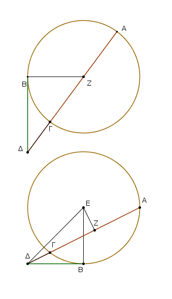
᾿Αλλὰ δὴ ἡ ΔΓΑ μὴ ἔστω διὰ τοῦ κέντρου τοῦ ΑΒΓ κύκλου, καὶ εἰλήφθω τὸ κέντρον τὸ Ε, καὶ ἀπὸ τοῦ Ε ἐπὶ τὴν ΑΓ κάθετος ἤχθω ἡ ΕΖ, καὶ ἐπεζεύχθωσαν αἱ ΕΒ, ΕΓ, ΕΔ·
ὀρθὴ ἄρα ἐστὶν ἡ ὑπὸ ΕΒΔ. καὶ ἐπεὶ εὐθεῖά τις διὰ τοῦ κέντρου ἡ ΕΖ εὐθεῖάν τινα μὴ διὰ τοῦ κέντρου τὴν ΑΓ πρὸς ὀρθὰς τέμνει, καὶ δίχα αὐτὴν τέμνει· ἡ ΑΖ ἄρα τῇ ΖΓ ἐστιν ἴση.
καὶ ἐπεὶ εὐθεῖα ἡ ΑΓ τέτμηται δίχα κατὰ τὸ Ζ σημεῖον, πρόσκειται δὲ αὐτῇ ἡ ΓΔ, τὸ ἄρα ὑπὸ τῶν ΑΔ, ΔΓ μετὰ τοῦ ἀπὸ τῆς ΖΓ ἴσον ἐστὶ τῷ ἀπὸ τῆς ΖΔ. κοινὸν προσκείσθω τὸ ἀπὸ τῆς ΖΕ· τὸ ἄρα ὑπὸ τῶν ΑΔ, ΔΓ μετὰ τῶν ἀπὸ τῶν ΓΖ, ΖΕ ἴσον ἐστὶ τοῖς ἀπὸ τῶν ΖΔ, ΖΕ. τοῖς δὲ ἀπὸ τῶν ΓΖ, ΖΕ ἴσον ἐστὶ τὸ ἀπὸ τῆς ΕΓ· ὀρθὴ γὰρ [ἐστιν] ἡ ὑπὸ ΕΖΓ [γωνία]· τοῖς δὲ ἀπὸ τῶν ΔΖ, ΖΕ ἴσον ἐστὶ τὸ ἀπὸ τῆς ΕΔ· τὸ ἄρα ὑπὸ τῶν ΑΔ, ΔΓ μετὰ τοῦ ἀπὸ τῆς ΕΓ ἴσον ἐστὶ τῷ ἀπὸ τῆς ΕΔ. ἴση δὲ ἡ ΕΓ τῂ ΕΒ· τὸ ἄρα ὑπὸ τῶν ΑΔ, ΔΓ μετὰ τοῦ ἀπὸ τῆς ΕΒ ἴσον ἐστὶ τῷ ἄπὸ τῆς ΕΔ. τῷ δὲ ἀπὸ τῆς ΕΔ ἴσα ἐστὶ τὰ ἀπὸ τῶν ΕΒ, ΒΔ· ὀρθὴ γὰρ ἡ ὑπὸ ΕΒΔ γωνία· τὸ ἄρα ὑπὸ τῶν ΑΔ, ΔΓ μετὰ τοῦ ἀπὸ τῆς ΕΒ ἴσον ἐστὶ τοῖς ἀπὸ τῶν ΕΒ, ΒΔ. κοινὸν ἀφῃρήσθω τὸ ἀπὸ τῆς ΕΒ· λοιπὸν ἄρα τὸ ὑπὸ τῶν ΑΔ, ΔΓ ἴσον ἐστὶ τῷ ἀπὸ τῆς ΔΒ.
᾿Εὰν ἄρα κύκλου ληφθῇ τι σημεῖον ἐκτός, καὶ ἀπ᾿ αὐτοῦ πρὸς τὸν κύκλον προσπίπτωσι δύο εὐθεῖαι, καὶ ἡ μὲν αὐτῶν τέμνῃ τὸν κύκλον, ἡ δὲ ἐφάπτηται, ἔσται τὸ ὑπὸ ὅλης τῆς τεμνούσης καὶ τῆς ἐκτὸς ἀπολαμβανομένης μεταξὺ τοῦ τε σημείου καὶ τῆς κυρτῆς περιφερείας ἴσον τῷ ἀπὸ τῆς ἐφαπτομένης τετραγώνῳ· ὅπερ ἔδει δεῖξαι.
᾿Εὰν κύκλου ληφθῇ τι σημεῖον ἐκτός, ἀπὸ δὲ τοῦ σημείου πρὸς τὸν κύκλον προσπίπτωσι δύο εὐθεῖαι, καὶ ἡ μὲν αὐτῶν τέμνῃ τὸν κύκλον, ἡ δὲ προσπίπτῃ, ᾖ δὲ τὸ ὑπὸ [τῆς] ὅλης τῆς τεμνούσης καὶ τῆς ἐκτὸς ἀπολαμβανομένης μεταξὺ τοῦ τε σημείου καὶ τῆς κυρτῆς περιφερείας ἴσον τῷ ἀπὸ τῆς προσπιπτούσης, ἡ προσπίπτουσα ἐφάψεται τοῦ κύκλου.
Κύκλου γὰρ τοῦ ΑΒΓ εἰλήφθω τι σημεῖον ἐκτὸς τὸ Δ, καὶ ἀπὸ τοῦ Δ πρὸς τὸν ΑΒΓ κύκλον προσπιπτέτωσαν δύο εὐθεῖαι αἱ ΔΓΑ, ΔΒ, καὶ ἡ μὲν ΔΓΑ τεμνέτω τὸν κύκλον, ἡ δὲ ΔΒ προσπιπτέτω, ἔστω δὲ τὸ ὑπὸ τῶν ΑΔ, ΔΓ ἴσον τῷ ἀπὸ τῆς ΔΒ. λέγω, ὅτι ἡ ΔΒ ἐφάπτεται τοῦ ΑΒΓ κύκλου.
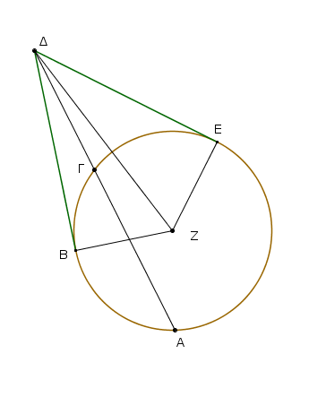
῎Ηχθω γὰρ τοῦ ΑΒΓ ἐφαπτομένη ἡ ΔΕ, καὶ εἰλήφθω τὸ κέντρον τοῦ ΑΒΓ κύκλου, καὶ ἔστω τὸ Ζ, καὶ ἐπεζεύχθωσαν αἱ ΖΕ, ΖΒ, ΖΔ. ἡ ἄρα ὑπὸ ΖΕΔ ὀρθή ἐστιν. καὶ ἐπεὶ ἡ ΔΕ ἐφάπτεται τοῦ ΑΒΓ κύκλου, τέμνει δὲ ἡ ΔΓΑ, τὸ ἄρα ὑπὸ τῶν ΑΔ, ΔΓ ἴσον ἐστὶ τῷ ἀπὸ τῆς ΔΕ. ἦν δὲ καὶ τὸ ὑπὸ τῶν ΑΔ, ΔΓ ἴσον τῷ ἀπὸ τῆς ΔΒ· τὸ ἄρα ἀπὸ τῆς ΔΕ ἴσον ἐστὶ τῷ ἀπὸ τῆς ΔΒ· ἴση ἄρα ἡ ΔΕ τῇ ΔΒ. ἐστὶ δὲ καὶ ἡ ΖΕ τῇ ΖΒ ἴση· δύο δὴ αἱ ΔΕ, ΕΖ δύο ταῖς ΔΒ, ΒΖ ἴσαι εἰσίν· καὶ βάσις αὐτῶν κοινὴ ἡ ΖΔ· γωνία ἄρα ἡ ὑπὸ ΔΕΖ γωνίᾳ τῇ ὑπὸ ΔΒΖ ἐστιν ἴση. ὀρθὴ δὲ ἡ ὑπὸ ΔΕΖ· ὀρθὴ ἄρα καὶ ἡ ὑπὸ ΔΒΖ. καί ἐστιν ἡ ΖΒ ἐκβαλλομένη διάμετρος· ἡ δὲ τῇ διαμέτρῳ τοῦ κύκλου πρὸς ὀρθὰς ἀπ᾿ ἄκρας ἀγομένη ἐφάπτεται τοῦ κύκλου· ἡ ΔΒ ἄρα ἐφάπτεται τοῦ ΑΒΓ κύκλου. ὁμοίως δὴ δειχθήσεται, κἂν τὸ κέντρον ἐπὶ τῆς ΑΓ τυγχάνῃ.
᾿Εὰν ἄρα κύκλου ληφθῇ τι σημεῖον ἐκτός, ἀπὸ δὲ τοῦ σημείου πρὸς τὸν κύκλον προσπίπτωσι δύο εὐθεῖαι, καὶ ἡ μὲν αὐτῶν τέμνῃ τὸν κύκλον, ἡ δὲ προσπίπτῃ, ᾖ δὲ τὸ ὑπὸ ὅλης τῆς τεμνούσης καὶ τῆς ἐκτὸς ἀπολαμβανομένης μεταξὺ τοῦ τε σημείου καὶ τῆς κυρτῆς περιφερείας ἴσον τῷ ἀπὸ τῆς προσπιπτούσης, ἡ προσπίπτουσα ἐφάψεται τοῦ κύκλου· ὅπερ ἔδει δεῖξαι.